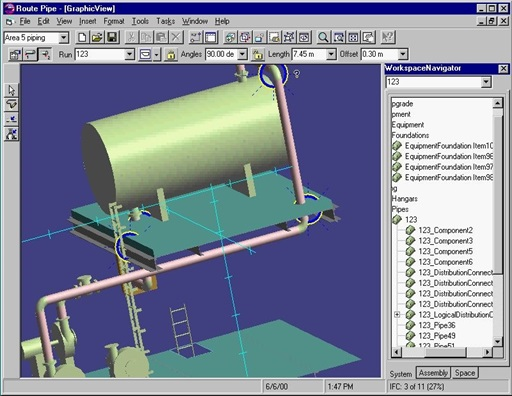

第14章：Intergraph
简介
1980年时，“大五”CAD供应商中，包括Applicon，Auto-trol Technology，Calma，Computervision和M＆S Computing，只有最后一个，现在称为Intergraph，仍是一个蓬勃发展的企业，虽然它也经历了自己的高峰和低谷。Intergraph从1980年代中期开始的历史无法完全与开发和目前营销MicroStation的Bentley Systems公司的历史分开。本章将从Intergraph的角度描述MicroStation的故事，将其与Bentley（第10章）的公司合作关系的分裂及Bentley最终走上自己的道路的深入描述留到另一章。
M&S Computing的成立
Intergraph最初是由一群工程师于1969年2月在阿拉巴马州亨茨维尔的IBM联邦系统部门工作时创建的，他们为土星火箭开发导航软件。该团队由吉姆·米德洛克、他的妻子南希、特里·斯汉斯曼（M&S中的S）、基思·肖恩洛克和罗伯特·瑟伯组成。詹姆斯·泰勒三个月后加入成为员工。
这是一个非常忠诚的创始人团队，除了斯汉斯曼外，他们所有人都一直留在公司直到20世纪80年代和90年代的大部分时间。事实上，泰勒是该公司的总裁兼首席执行官，直到2003年7月第二次退休。当公司从软件承包商转向营销交钥匙图形系统时，斯汉斯曼离开了公司。他想留在软件业务中。不幸的是，他几年后因心脏病发作去世。
M&S Computing成立的基础是，政府机构将开始使用数字计算机进行实时导弹制导，而不是直到那时一直使用的模拟计算机，作为一家私人公司，就会有利用这种技术变革的商业机会。公司的一些早期工作是与NASA和美国陆军合作，开发应用数字计算机解决实时导弹制导问题的系统。与大多数创业公司一样，该公司接受任何有助于支付账单的工作。许多这样的任务最终使用计算机图形来显示数据，例如模拟导弹轨迹。
一个重要的早期项目是为印刷电路板的设计和布局开发交互式图形系统。这项NASA的努力基本上将该公司推入了计算机图形业务。稍后，该软件被扩展到涵盖集成电路的设计。根据米德洛克的说法，能够独立于程序员执行计算机图形是当时的一种新颖概念。该软件的最初小型计算机版本是在施乐（原科学数据系统）Sigma 5和Sigma 2计算机上实现的。
M&S Computing在1980年更名为Intergraph（交互式图形），然后于1981年首次公开发行。为简便起见，在本章剩余部分中，该公司将简称为Intergraph。
吉姆·米德洛克主导公司
没有详细讨论吉姆·米德洛克及其对公司近30年的影响，任何关于Intergraph的故事都是不完整的。米德洛克在1956年获得了北卡罗来纳州立大学电气工程学位，并在IBM工作了12年，参与了阿波罗航天计划，然后创立了Intergraph。他的工作主要涉及开发用于引导、控制和检查土星运载火箭的软件。米德洛克的电气工程背景对他在公司担任CEO时做出的许多商业和产品决策产生了深远的影响。
将Meadlock描述为一个控制个体，这简直是一个轻描淡写的说法。除了对成为绅士葡萄种植者感兴趣之外，他和妻子南希的整个生活都围绕着公司展开，甚至在亨茨维尔西部公司工业园区附近建了一所家。在他们之间，Meadlocks像每一美元都是从他们自己的口袋里出来一样控制开支。一位程序员曾告诉我，他需要得到南希的个人批准才能获取他正在处理的计算机系统的编程手册。然而，也有矛盾的地方。Meadlock不赞成员工坐头等舱，即使他们是在免费升级的情况下这样做。另一方面，Intergraph是唯一拥有自己公司飞机的CAD公司。
和许多其他工程企业家一样，Meadlock对传统的销售和营销没有太多的用处。他的态度是，如果你制造了一个好的产品，顾客就会自然而然地来。在20世纪70年代末，该公司只有少数销售人员，促销资料主要由黑白色的产品数据表组成。主要的销售技巧是将潜在客户带到亨茨维尔，让Meadlock施展他的魅力。
正如下文所描述的，梅德洛克是一位杰出的产品战略家。公司做出的每一个重要产品决策似乎都会导致下一个重大发展。在1970年代后期和1980年代期间，公司的产品开发活动几乎没有浪费。特别是在CAD行业被以硬件为导向的一体化系统所主导的时期，梅德洛克对软件和硬件之间的关系有着很好的感觉。但他很固执，这种固执既给Intergraph带来了困难，也带来了成功。公司可能坚持生产自己的工作站和个人电脑时间过长，但当它换了平台后，就再也没有回头了。
然而，梅德洛克固执的终极例子涉及Intergraph与英特尔之间的微处理器专利长期法律纠纷。在大多数行业观察家认为梅德洛克在与风车作战时，他却决心坚持到底，主要是因为他坚信自己的公司是正确的。正如本章后面所描述的，他被证明是正确的，获得了数亿美元的利润。
梅德洛克在其职业生涯中获得了许多奖项，包括成为1985年国会高科技奖的15名获奖者之一。他还在1994年在华盛顿特区的A / E / C SYSTEMS会议上获得了Ed Forrest奖，以表彰他对CAD行业的贡献。
Intergraph进入商业图形市场
在1970年代初，Intergraph基本上还是一家咨询公司。一体化图形系统的市场非常缓慢地起步，主要用于印刷电路板和集成电路的设计。在这种技术中有一个一致性，那就是数据层的概念。设计由数据元素的二维表示组成，这些层被叠放在一起。
与此同时，在田纳西州的纳什维尔市附近，一位年轻的数学博士乔尔·奥尔博士被雇用来指导LAMP（纳什维尔都市区的位置和地图程序）的开发和部署。市政府需要一套市政地图系统，这源于田纳西州州长在1972年要求市政府支持交通事故报告和分析系统。作为系统经理，负责为纳什维尔都市区（这是一家市县政府联合体）建立地理编码方法的奥尔博士寻找处理各种需求的替代方案。虽然工程师需要精确的数据，但规划部门可以使用更普遍的数据。
1973年，为数字化和管理地理空间数据拨出了30万美元的预算。奥尔博士着手了解休斯顿、亚特兰大和俄勒冈州尤金等其他城市建立数字地图数据库的情况。基于他的调查结果，准备了一份招标文件，并分发给潜在的投标人。纳什维尔收到了40份回应，包括Synercom和Calma的提案，这两家公司在这个市场上比Intergraph更加成熟。
尽管Intergraph本身并没有地图系统，但它提出将公司开发的集成电路设计软件转换为管理地理空间数据的工具。当时没有人称之为“地理空间”系统。Intergraph同意Orr的观点：数字化地图可以在CRT屏幕上查看、交互式编辑，并为市政组织（如学区、消防和警察部门）生成各种报告。
根据Orr的说法，Intergraph赢得该系统合同的主要原因之一是愿意将交互式地图系统与纳什维尔的IBM 370/145大型机相接。该计算机拥有当时巨大的磁盘存储空间，有十个可拆卸的磁盘驱动器，每个驱动器的容量为300MB。Orr意识到地图系统会生成大量数据，远远超过当时可用的小型计算机的存储容量。
Intergraph提出的系统包括一台数字PDP-11计算机，具有24K 16位字长内存和5MB磁盘驱动器，四个Tektronix 4014终端，Summagraphics数字化仪和公司主要图形软件包IGDS（交互式图形设计系统）的早期版本。该软件的特定版本被称为IGDS3。内存很快增加到48K字。安装系统后不久发现的一个问题是，它只能处理直线和圆弧。由于纳什维尔沿着一条河流延伸，需要处理不规则曲线。当这一点被指出后，Keith Schonrock返回亨茨维尔，很快就在IGDS中添加了处理样条曲线的能力。
纳什维尔开始在内部进行数字化地图工作，但很快意识到它承担的任务比自己能够处理的要大。在与亚特兰大的一家工程公司的合同流产后，Intergraph接受了一份价值32000美元的数字化地图合同。据Meadlock称，最终完成这项工作花费了公司20万美元。在履行这项义务的过程中，公司开发了重要的软件，用于对齐和缩放单个地图板。
从这个项目中发展出了Intergraph随后业务的重要部分。在接下来的30年里，该公司在全球范围内可能安装了数十亿美元的地图系统。它还导致了为政府机构开发专门的地图系统的有利市场-其中很多至今仍属机密。大约在同一时间，Intergraph向洛杉矶的Fluor Corporation交付了一个IGDS3系统。
当然，Orr后来成为了计算机图形行业的领先顾问、作家和演讲者，以及我认为是一个亲密朋友的个人商业伙伴。
从咨询合同转向商业系统
到1975年，Intergraph已经将IGDS磨练到了一个相当可观的地图和一般绘图解决方案的程度。虽然该公司的图形系统仍然基于Tektronix存储管图形，但它采取了一种非常新颖的方法来使用这项技术。如其他地方所提到的，存储管的一个主要缺点是，当对显示进行更改时，例如移动或删除图形元素时，整个图像必须重新生成。如果用户正在查看绘图的一小部分并希望查看整个绘图以便缩放到其他区域，这尤其耗时。
Intergraph通过将两个存储管显示器用作用户站或终端的组成部分来解决了这个问题。一个CRT通常显示正在工作的绘图或地图的总体视图，而第二个CRT显示较小的工作区域。在其他时候，一个单元用于字母数字数据，而另一个显示图形信息。典型的终端在一个大数字化器桌子上安装了这两个CRT，这是操作员的主要通信设备。每个工作站都包含一个DEC LSI-11/2计算机来控制本地操作。
1970年代末的Intergraph
从1973年的不到200万美元的收入，Intergraph的收入增长到1978年的超过2000万美元。尽管公司仍然做一些合同编程工作，特别是为联邦政府机构，但Intergraph的大部分业务涉及交互式图形系统，其中大部分都包含IDGS软件。虽然到1978年公司已经发展到约200名员工，但关键的高管仍然是最初的创始人。
大多数客户将他们的Intergraph系统用于地图制作或工程绘图应用。主要用户包括Commonwealth Edison，Detroit Edison，Sargent＆Lundy，Bechtel，U.S. Steel，Fluor，Michigan Highway Department和Texas Highway Department。交付给德克萨斯州的IGDS系统包括Intergraph最早的一些摄影测量软件。随着时间的推移，这将成为公司的技术优势之一。
该公司因其系统设计的人因素方面而受到高度尊重。该软件在地图制作、绘图和数据库管理方面表现出色。尽管一些制造公司是其客户，但机械设计和绘图在这个时期并不是一个目标市场。
管理爆炸性增长
从1978年到1984年的六年时间里，Intergraph的收入增长了20倍，达到了4亿美元以上。到1980年，将主导整个十年乃至更长时间的工程设计和地图制作市场的Intergraph系统架构正在迅速形成。如前所述，Intergraph的产品开发活动没有浪费任何时间。沿着这条路，每一步都很自然地引导到下一步。一个很好的例子是管理工程图纸和地图的属性数据。
一旦它确立了自己作为制图系统的领先供应商，Intergraph就直接瞄准了AEC市场，并开始系统地挤掉Auto-trol Technology，后者曾经是这个市场的早期领导者，特别是在工艺厂工程方面。仅仅创建一个流程工厂的仪表图并不是一个复杂的任务。符号从符号库中检索，文本添加在符号上或符号旁边的预定义位置上，并且互连的线路被强制连接到符号的捕捉点上。问题在于，用户最终获得了一些线条、弧线和字母数字文本的漂亮图片。这些数据没有任何有意义的上下文 - 没有办法找到携带特定产品的线路上的所有8英寸闸门阀。这就是系统实施者所说的“属性”数据。
基本上有三种方法来管理图形和属性数据的组合 - 每种都有其自身的优点和缺点。属性数据可以添加到单个集成系统中的图形信息中。这是一种直接的方法，许多公司都采用了这种方法。缺点是，绘图文件变得非常大，通常很难保持属性数据与图形元素同步。第二种方法是将所有内容存储在数据库中，并从数据库中提取绘图图像。虽然这最终成为了一种被接受的技术，但在1980年代，计算机速度还不足以有效地完成这项工作，而数据库软件技术仍然相当不成熟。
第三种方法是创建两个平行宇宙，一个用于图形，另一个用于相关的属性信息。这基本上是Intergraph所做的事情，并且在十多年的时间里非常成功。图形系统是先前提到的IGDS软件，到1980年已经进入第八个版本。数据管理功能由一个新程序DMRS（数据库管理和检索系统）处理。它是一种分层数据库管理系统，在当时是首选技术。在关系数据库技术被认为已经准备好投入实际应用之前，还需要几年时间。
为了加快在DMRS数据库中查找特定信息的过程，Intergraph开发了一种硬件设备，称为“文件处理器”（通常仅称为磁盘扫描仪），该设备根据应用程序生成的搜索参数检索记录。文件处理器可以根据包括逻辑运算（例如AND、OR、LESS THAN等）的请求检索数据记录。
从根本上讲，这是一个硬件解决方案，用于解决软件问题。
最终，软件开发和更快的计算机硬件将消除对文件处理器的需求，但在许多年内，它为Intergraph提供了与公司竞争对手相比的性能优势。该公司在其产品开发活动中向前看的另一个迹象是，到1970年代末，Meadlock和他的团队已经明显意识到，从16位计算机体系结构向32位系统的过渡正在进行中。在Intergraph准备用数字的新的但更昂贵的32位VAX计算机取代其当时使用的16位PDP-11计算机之前，它已经开始将其软件转换为与32位数据文件一起工作。因此，当公司切换到VAX时，它能够比大多数竞争对手更轻松地完成这项工作。
到1980年，公司约60％的系统业务是在过程工厂设计和重型工程中完成的，大部分余额都与制图有关。Bob Thurber负责亨茨维尔的工厂设计业务
到1980年，公司系统业务的约60％是过程工厂设计和重型工程，其中大部分是与地图相关的余额。鲍勃·瑟伯领导了在汉茨维尔的工厂设计业务活动，所有的硬件工作也在那里完成。吉姆·豪尔处理基本地图和土地使用申请，同样在汉茨维尔，而公用事业和市政地图由吉姆·哈吉斯和基思·麦克丹尼尔在丹佛管理。业务的运营方面由基思·肖恩洛克领导，埃德·伊娃是国家销售经理，向他报告。在1978年至1980年间，公司的收入像火箭一样起飞，从2000万美元增长到超过5600万美元。到1981年中期，公司已经安装了270个系统。
Intergraph成为CAD行业的重要参与者
1981年，Intergraph的产品开发活动似乎进入了高速发展阶段。尽管它不是第一个跳上栅格图形的CAD供应商，但当它这样做时，Intergraph做得很好。第一个产品是一个1280x1024分辨率的单色栅格显示器，打包在公司的双屏终端中，就像之前的存储管单元一样。有趣的是，虽然双屏配置最初是为了克服存储管的缺点而实现的，但Intergraph在公司转换到栅格显示器后仍然使用这种设置多年。 IGDS软件支持在两个屏幕上显示绘图的八个独立视图。单色显示器很快被具有类似分辨率的彩色单元所取代。
同样重要的是，公司在1981年将Digital的32位VAX 11/780计算机添加到其产品线中。尽管VAX在1978年推出，但Intergraph花了一些时间重新编译软件以在VAX上本地运行。PDP-11软件可以在VAX上以仿真模式运行，但性能不尽人意。将PDP-11软件移植到VAX的本机模式需要进行一些编码更改和重新编译以及大量的测试。这个转换有些复杂，因为最初的IGDS软件大约50％是FORTRAN和50％是PDP-11汇编语言编写的。同样，终端的高速接口必须重新设计以实现最大效果。第一个Intergraph VAX系统于1981年秋季在俄克拉荷马州巴特尔斯维尔的菲利普石油公司安装。这是一个为八个基于VAX的系统的大订单的一部分。Intergraph引入基于VAX的系统的重要方面是，该公司使用了Digital VMS操作系统的标准版本。这意味着第三方软件包可以无需修改即可运行。当然，如果这些软件包的开发人员想使用Intergraph的双屏图形终端，那就需要进行一些自定义工作。这导致与第三方软件供应商之间的合作关系，他们提供Intergraph没有的软件，例如结构分析。
转换到基于VAX的系统需要一定的时间。实际上，即使在开始发货VAX系统之后，Intergraph仍然继续推出新的PDP-11系统。这对于低成本系统尤其如此，因为VAX 11/780计算机的价格仅从20万美元开始。正如前面提到的，Intergraph已经转换为IGDS和DMRS的32位数据格式。因此，公司的PDP-11和VAX系统可以轻松共享数据，使得从16位到32位系统的过渡对于竞争系统的用户来说比较轻松。
其中一个低端系统是公司称为“启动系统”的系统。它由DEC PDP-11 / 23微型计算机组成，配备Digital的RSX-11M操作系统，一个84MB磁盘，一个带有双19英寸单色栅格显示器的终端，一个36英寸乘48英寸的数字化仪和Intergraph的IGDS软件，以及几个建筑空间规划和绘图软件包。所有这些只需要85000美元。[5]惠普7580笔式绘图仪增加了20000美元，而将彩色显示器替换为单色显示器则增加了22000美元。机械设计和绘图版的“启动系统”在1981年11月的底特律AUTOFACT III上展示。公司在同一时间推出了彩色阴影软件，需要几分钟才能生成图像。
Intergraph是最早意识到支持分布式操作的CAD供应商之一。它在20世纪80年代初开始销售的通讯系统由数据集中器组成，这些数据集中器连接到Digital UNIBUS，以每秒2 Mbps的速度传输数据，距离可达6000英尺。在这个术语变得普遍之前，公司实际上称这个产品为“互联网”。
1981年末，公司48％的业务来自地图和土地管理系统，42％来自AEC系统。余额主要是联邦政府机构的定制编程工作。Intergraph计划进入电子电路板设计市场，提供手动放置和布线软件。特别是，该公司计划针对使用Multiwire技术进行电路板制造的潜在客户。
Multiwire是一种技术，其中一台机器在电路板上放置重叠的绝缘线，而不是像传统的印刷电路板那样蚀刻线路。与PCB相比，可以更容易地使用焊枪和跳线线对Multiwire板进行更正。Intergraph本身是这项技术的重要用户，已经在1980年和1981年安装了500万美元的专业设备，用于生产Multiwire板。虽然Intergraph从Digital购买计算机设备，但它为其双屏工作站，磁盘扫描仪和驱动静电式绘图仪的矢量到栅格转换器生产定制电路板。[6]事实上，Intergraph在这一点上开始成为一个相当重要的电子制造公司。
Intergraph还在1981年时间框架内开始了机械设计软件的严肃开发。在1982年11月在费城举行的AUTOFACT 4上，Intergraph展示了新的机械设计和制造软件，包括5轴加工。一个新的64位图形处理器使该软件能够进行隐藏线删除操作，执行图像旋转并非常快地生成阴影图像。
该单位还支持栅格到矢量的转换，用于扫描应用程序。
在同一次会议上，Intergraph推出了一款低成本的VAX 11-730系统，售价为145000美元，配有一个工作站和机械设计和绘图软件。该公司还预览了一款由Motorola 68000微处理器驱动的新InterAct工作站。
这个新的InterAct工作站有两个版本。 DSP041使用两个单色栅格显示器，而DSP042有一个单色显示器和一个256色显示器。基于68000的显示处理器具有68KB的内存，可以在图形图像从VAX内存传输后本地处理诸如平移，缩放和旋转等功能。相对复杂图像的视图转换通常需要不到两秒钟。该公司还在开发一个阵列处理器，可以比在VAX 11/780上使用软件更快地生成具有隐藏线的复杂三维模型的图像。
贝克特尔验证系统生产力
该公司于1981年4月公开上市。Intergraph的收入在1981年增长到9100万美元，随后一年增长到1.56亿美元。由于VAX系统每个座位售价超过10万美元，该公司的增长动力来自于向大型工程组织的销售。
典型的是贝克特尔的洛杉矶电力部门（LAPD）。到1983年5月，该组织在五个不同的站点拥有14个Intergraph系统，共有84个工作站致力于发电厂设计应用。到1983年，Intergraph已经取代Auto-trol Technology成为贝克特尔的主要CAD供应商。
使用这些系统，贝克特尔看到了显著的生产力提高。管道支架设计时间从四小时缩短到15分钟，而至少在一个案例中，30小时的结构框架设计只用了30分钟就完成了。其中很多性能是通过贝克特尔开发的专门IGDS附加组件实现的。一个例子是BISEPS（Bechtel Interactive System for Engineering of Pipe Supports）。
在地图市场上确立强劲地位
许多创业组织失败是因为创始人试图将这些公司保持在他们最初的舒适区，而不是适应市场的需求。Intergraph的创始人主要具有与NASA阿波罗计划相关的技术背景。然而，这并没有阻止他们将Intergraph带入他们认为是新兴机会的新市场。可能比其他任何市场更能定义Intergraph的市场是可以一般描述为地图制作或地理信息系统（GIS）的市场。
GIS并不是指一个单一的应用程序。相反，它是一个广泛的应用程序谱系，有一个共同点-管理大量的空间相关数据。 Intergraph在这个市场上主导的一个方面是制作地形图，主要为军事和非军事政府机构。另一个市场细分是为公用事业收集和准备地图，其中包含与物理资产相关的详细信息。后者很快被称为自动化制图/设施管理（AM / FM）。这些地图与用于规划目的的地图有很大不同，后者记录和显示的信息更多地涉及用途类型，例如分区数据或人口密度。这后者被称为主题地图，是Intergraph从未特别优先考虑的市场细分。
Intergraph的第一个重要地图客户之一是Southern Bell。与AT＆T和贝尔实验室合作，Intergraph使用公司的DMRS和IGDS产品实施了连续设施模型。这个软件被用来建模Southern Bell的外部设施——即电话网络不在其交换中心内的部分。它基本上是一个由图形驱动的数据库管理解决方案，尽管可以从字母数字终端进行查询。通过这些字母数字终端输入的电话网络更改立即反映在数据的图形视图中。
早在1980年代初，地图软件在石油和天然气行业中管理勘探和生产数据是另一个迫切的需求。就在几年前，美国经历了一次严重的石油短缺，导致当地加油站排起了长队。Intergraph意识到在这个领域需要新技术，并投入提供解决方案给这个行业。结果发现，为支持能源公司开发的许多应用程序模块也对其他地图客户有用。这些软件包包括：
数字化纸质地图和照片图像以生成空间数据库。
将数据从一个坐标系统转换到另一个坐标系统。
调整数字化的数据以补偿纸张收缩并匹配一张地图到另一张地图。
从数据点网格生成数字化等高线地图（这通常称为数字地形建模）。
根据线性或区域特征选择数据。
数字化和处理特殊数据，如油井记录和地震结果。
在过去十年中，Intergraph的产品开发活动使其在追求这个市场方面处于非常有利的地位。将图形和数据管理功能分离成两个单独的程序——IGDS和DMRS，证明是管理这些应用程序所涉及的大量数据的有效方法，而公司专有的磁盘扫描仪则导致快速交互响应时间。使用行业标准的Digital VAX计算机，使油气公司相对容易将他们的Intergraph系统与其他数据处理资源集成。最后，双屏终端，特别是彩色光栅版本，便于查看这些大数据文件。
虽然Calma、Computervision、Auto-trol Technology甚至Applicon都提供了地图应用程序，但这些竞争对手没有像Intergraph那样专注于这个市场。可能公司最严重的竞争对手是一家总部位于休斯顿的公司Synercom。后者拥有很好的技术，但从未能像Intergraph那样获得市场认可。在规划领域，主要的竞争对手最终会成为环境系统研究所（Environmental Systems Research Institute，简称ESRI），但在20世纪80年代初，它还没有达到临界质量。
勘探和生产地图系统也为Intergraph提供了扩大国际业务的机会，特别是在中东地区。这最终成为公司的主要收入来源。后来我们会看到，到2004年，Intergraph现在称之为空间信息管理，直接或间接地产生了公司收入的75％。
新一代工厂设计软件
作为公司开发新工艺厂设计系统计划的一部分，Intergraph于1981年末与休斯顿公司Zydex Engineering, Inc.合作开发新工厂设计系统。Zydex由Eduardo（Ed）Zorrilla经营。这个联合开发项目最终发展成为Intergraph的Plant Design System（PDS）。该软件旨在为包括设计、草图、材料用量和可视化在内的复杂工艺厂提供全面的交互式三维能力。Zydex制定了PDS的规格，而Intergraph的人员实际上进行了软件实施。
PDS的第一次公开展示是在1985年3月休斯顿的Petro Expo‘85展会上。最初的模块主要涉及二维草图应用程序，如P＆ID和仪器环路图。我在1985年4月在达拉斯的NCGA-85展览会上看到了软件的演示。当时我的观察是：
- 这个新软件的键盘操作比Intergraph之前的工厂设计软件更多。
- 在VAX 11/750和InterAct双屏工作站上的性能并不特别出色，除了生成带阴影的工厂模型图像。后者任务的完成是通过使用先前描述过的Intergraph Graphics Processor 来实现的。
- 管件是通过先布线，然后批量插入规定的管件插入的。在演示期间，插入八个管件需要三分钟的时间。然而，在一个容器中插入管件只需要几秒钟的时间。
- 该系统似乎不易使用。在我看到的演示中，应用工程师在模型中迷失方向，不得不停止、注销、重新加载模型，然后继续工作。当他注销时，他最后的几项操作被丢失了。
到1986年中期，英特格尔花费了超过800万美元开发了完整的应用套件。PDS代表了一种新的工程设计方法，在这种方法中，设计数据管理被视为与图形物理设计同等重要甚至更重要。描述性信息以一种易于多个应用共享相同数据的方式存储。其基本概念是，一旦定义了数据元素（例如在P＆ID（工艺图）中），该信息就可以用于生成其他图纸，如仪表环路图，或者验证实际管道设计中未省略工艺元素。这适用于涉及二维示意数据或工厂三维模型的应用程序。而以前的系统往往将每个应用程序的数据分开处理，从一个任务到另一个任务的信息传输是一个“碰巧”事件。
PDS实际上将信息存储在三个相互关联的数据库中。
参考数据库-包含与行业设计规范、供应商目录数据、作业规范、符号库等相关的信息。
任务数据库 - 用于存储与活动设计任务相关的工作数据，在该设计方面被“批准”之前存储。
主数据库 - 已批准的项目数据存储库。一旦部分工厂设计存储在 Mater 数据库中，需要特殊程序才能更改该数据。
PDS 中实施的特定程序处理以下任务：
工艺和仪表图（包括 1000 个符号库）
仪表图示
仪表回路图
设备设计
厂区布局
结构建模（由Intergraph-Rand Micas或第三方程序处理的分析）
管道（包括一个75,000个组件的库）
电气赛道设计
暖通空调
PDS的基本用户界面是使用IGDS完成的，到1986中期，IGDS的开发工作总共超过了800人年。该软件在采用VMS操作系统的Digital VAX计算机上实现。正交管道图是通过选择工厂模型的部分，消除隐藏线，然后使用IGDS来完成图纸制作的。
当Intergraph的一组程序员准备在1986年中期将PDS作为基于VAX的系统正式发布时，其他Intergraph软件组正在为公司正在开发的UNIX工作站准备新一代应用程序。与Intergraph销售的任何其他可比较程序相比，PDS将保持基于VAX的应用程序更长的时间，并且直到1990年代初它才被移植到UNIX。
1995年8月，Intergraph提起了一起诉讼，寻求解除与Zydex的商业合作关系。Intergraph希望能够在不必支付Zydex长期版税的情况下继续销售PDS，这些版税据说在软件销售价格的30%左右。几个月后，Zydex提出反诉，指控非法解除商业关系，并寻求对PDS的独家所有权以及重大的补偿和惩罚性赔偿。可以想象，如果法院支持Zydex，这将有效地让Intergraph退出工厂设计业务。
在近两年的诉讼之后，双方于1997年达成了和解，但未能就某些和解条款达成协议。1997年9月，法院发出一项解决争议问题的命令，并驳回了本案。协议包括Intergraph以2480万美元收购Zydex。根据这些条件，交割从未进行过，并最终在11月进行了听证会，在听证会上，法官下令双方签署结束文件。
文档最终由双方执行，但Zydex仍希望向Intergraph再挑战一次，并表示可能会上诉法官的命令。为了解决这一争端，Intergraph同意增加付款金额至2630万美元，并在1998年1月最终达成协议。1997年PDS软件的销售额约为4500万美元。
1980年代中期的Intergraph
20世纪80年代是Intergraph的高速增长期。该公司开始追求几乎所有自动设计和绘图的方面，甚至包括建筑应用，该市场领域在1990年代末与Meadlock抱怨难以盈利而退出。典型的应用包括结构钢细节和加强混凝土细节，每种售价10000美元。要记住，Intergraph的软件价格是按系统计算的，而在此时，公司声称VAX 11/785系统最多可以支持20个终端。
20世纪80年代初，Intergraph开始对执行职位过于热衷。Jim Meadlock当然是总裁和CEO。在他下面有8名执行副总裁：Keith Schonrock、Jim Taylor、Nancy Meadlock、John Thorington、Roland Brown、Allan Wilson和Willam Zarecor。Nancy Meadlock作为行政执行副总裁正在担任越来越多的责任，并显然是王位背后的权力。大约在同一时间，Rick Lussier成为销售副总裁。他一直担任这个职位直到1985年初离开该公司，由Howard Fisher接替。两个人之前都曾在Tektronix与我共事。
Intergraph在1983年中期从其产品线中淘汰了大部分16位数字PDP-11系统，并专注于32位的VAX机器。到1983年秋季，Digital已向Intergraph运送了超过500个VAX系统。唯一的例外是低成本的Innovator II，其针对使用数字PDP-11/23计算机的建筑应用。
建筑软件产品管理由Al Kemper负责，他报告给产品营销副总裁George Stienke。Kemper是建筑设计领域备受尊敬的作者，并曾在Ralph M. Parsons和Calma的Spinoff Tricad工作过。Kemper的总体规划设想了使用Intergraph软件从制作大体研究到CAD生成的透视场地视图、漫步和最终成为“城市模拟”的一切。Kemper还认为有必要使用计算机来管理项目工作流程，这在20世纪90年代后期因互联网的使用而受到极大关注。
在机械领域，重要的发展是与Xerox Corporation签署的协议，该协议于1984年1月签署，根据该协议，两家公司计划在表面和实体建模、运动学分析、机器人技术和增强数字控制方面进行合作。两个月后，引入了一个机构建模软件包，该软件包生成的数据可供第三方分析程序使用。
到1984年中期，Intergraph的业务正如火如荼。它在1983年将其市场份额增加到14.7％，销售额达2.52亿美元。在此行业中，只有Computervision和IBM的销售额更大。 Intergraph参与了CAD行业的每个细分领域，销售额分别如下：
| AEC | 43％ |
|---|---|
| 制图 | 31％ |
| 机械 | 13％ |
| 电子 | 2％ |
| 技术出版物 | 2％ |
MicroStation 登场
（正如先前提到的，Bentley兄弟、Bentley Systems Incorporated（BSI）和MicroStation的详细故事包含在第10章中，尽管其中一些内容在此重复。）
Intergraph的定价模式直到开始销售自己基于Clipper的工作站，就是按每个CPU许可IGDS和DMRS软件。当一家公司购买VAX 11/780系统时，它可以连接尽可能多的终端，只要计算机可以物理支持。限制实际上基于客户所做工作类型的可接受性水平。只有一个问题，在当时软件只能与Intergraph的制造商终端配合使用，这些终端相当昂贵。像当时其他许多一体化CAD供应商一样，Intergraph的大部分收入来自销售硬件，软件被视为使公司能够销售硬件的手段。
20世纪80年代初，Intergraph的一个重要客户是特拉华州威尔明顿的杜邦公司。Keith Bentley自佛罗里达大学获得电气工程硕士学位后加入了杜邦公司。杜邦公司使用Intergraph的系统制作工艺装置电气图。然而，增加容量的高价格限制了使用。Bentley相信有一种更低成本的选择，他花费自己的时间开发了一种名为PseudoStation的软件包。它可以让人们在配备了图形卡或Tektronix存储管终端（如4014）的低成本数字VT-100终端上使用Intergraph的CAD软件。当杜邦的设计师仅想在现有图纸上进行更改，例如修改一些文本时，PseudoStation被证明特别具有成本效益。
1983年，Keith Bentley离开杜邦，到加利福尼亚州的Dynamic Solutions与他的兄弟Barry一起工作。在离开杜邦之前，Bentley与杜邦谈判达成协议，他获得了该软件的营销权，并为公司的PseudoStation用户提供技术支持作为交换。在前往加利福尼亚途中，他在亨茨维尔停留，向Intergraph提供了这款软件。据Bentley所说，“我本可以将PseudoStation以5000美元的价格卖给Intergraph，那样就完了。我没有这么做是一系列幸运的巧合之一……”[21]
洛杉矶拥有大量Intergraph的安装，Keith和Barry Bentley很快就在那里发现了PseudoStation的受众。Keith成立了Bentley Systems Inc，并安排Dynamic Solutions以其软件中的工作作为交换来营销该软件。不久，Keith和Barry出售了他们在Dynamic Solutions的股权，并搬到了费城地区，与兄弟Scott和Ray一起工作。短时间内，他们销售了超过350份基于终端的PseudoStation软件。
搬到费城后，Keith开始确信，他可以在IBM PC/AT上做Intergraph在VAX上所做的事情。这个新版本的软件很快被称为MicroStation。1987年1月，Intergraph以300万美元购买了Bentley Systems 50％的股权，并宣布MicroStation将由Intergraph在UNIX和PC平台上推广。
Micro IGDS – MicroStation的替代品
Bentley Systems并不是Intergraph收购的第一家PC CAD软件公司。CNR Research由前 Bechtel Power Corporation的两名员工Antonio Robinson和Erdwing Coronado在密歇根州安阿伯创办。Robinson曾是Bechtel的系统工程师，而Coronado则是高级程序员分析师。当Bechtel 于1984年宣布关闭安阿伯办公室时，两人决定自己创办软件公司CNR Research，Robinson担任总裁，Coronado则是研发副总裁。
最初，两人专注于基于他们在Intergraph系统和Digital硬件方面的知识提供CAD / CAM咨询。1985年4月，两人决定创建一个与Intergraph的IGDS兼容的二维草图软件包。名为C-CADD，在MS-DOS和UNIX下运行，并实现了IGDS命令的约30％至40％等效命令。根据A-E-C Automation Newsletter的说法，这代表了IGDS 90％以上的功能。该软件售价为每份3,000美元，比AutoCAD稍微贵一些。
C-CADD是用C语言编写的，那时是一种相对较新的编程语言，其文件与Intergraph的IGDS文件结构兼容，因此无需翻译。竞争对手，包括VersaCAD和Autodesk，正在推广他们可用于转换Intergraph绘图文件的软件事实。1986年5月，Intergraph收购了CNR Research50％的股权。在新的关系下，CNR继续通过其现有的经销商渠道（当时有八家公司）销售PC版本的C-CADD，而Intergraph通过其销售组织销售UNIX版本，现在称为MicroIGDS。 Intergraph收购Bentley后，便对MicroGDS的UNIX版本失去了兴趣，CNR Research和C-CADD逐渐消失了。
在20世纪80年代中期的Intergraph软件
正如前面提到的，Intergraph的主要图形软件包是IGDS。数据以二维或三维格式维护，将其从一种状态转移到另一种状态时会遇到一些困难。其中一个主要限制是，一个活动图只能有63个数据层。这比竞争系统明显少，后者通常可以存储256个或更多个层，并且在某些情况下可以存储无限数量的层。此外，可以叠加最多三个参考图，并且每个图具有自己的63个图层。
另一个缺点是，在其他供应商已经转向或正在转向32位和64位浮点数据的时候，IGDS使用了32位定点格式。这是性能和精度之间的权衡。
在进行二维草稿设计时，IGDS特别高效。其中一个原因是，图形数据不会携带未使用的三维数据，而一些竞争系统则会携带该数据。该软件可以生成最多八个独立的图形视图，并在双屏幕工作站的每个屏幕上显示最多四个视图。一种名为User Command的宏语言使用户可以将一系列任务组合成单个命令。主要用户界面是位于终端显示器前面的大型数字化仪上的硬拷贝菜单。为了更改菜单的布局或添加新命令，用户需要了解FORTRAN编程知识。到1985年中期，界面正在过渡到更多的屏幕菜单和“填写空白”对话框。
当时市场上的大多数CAD包将属性数据存储为图形文件的一部分。Intergraph采取了不同的方法，并将这些数据存储在由前面提到的DMRS（数据管理检索系统）软件管理的单独文件中。DMRS主要使用基于CODASYL标准的分层数据结构，虽然到1985年中期，Intergraph正在将某些关系技术纳入该软件包中。
DMRS不需要执行简单的CAD任务，如草图，而许多客户选择不使用它，因为学习软件需要时间。一个缺点是用户不能备份与单个绘图文件相关联的数据，而是必须备份整个DMRS数据库。这对于公用事业映射客户而言可能效果很好，但对于典型的建筑或工程组织来说确实很不方便。即使在没有Intergraph的文件处理器的情况下，DMRS也可以使用，但当它成为VAX配置的一部分时，硬件大大提高了性能。DMRS与IGDS之间的链接由一个称为属性服务的软件模块管理。数据管理软件的价格以及IGDS与所有Intergraph系统核心的VAX计算机成本捆绑在一起。
和所有其他CAD供应商一样，Intergraph也对实体建模产生了兴趣。其实体技术的实施，Solids Modeler，与IGDS紧密耦合。线框和曲面定义的几何形状可以用来创建实体。必须使用图形处理器才能使用此软件。
在这个时期，Intergraph可能拥有行业中最丰富的应用软件阵列。这些应用程序分为几个广泛的类别。
- 工艺厂设计
- 工程设计
- 建筑设计
- 测绘
- 石油勘探和生产。
- 机械工程。
- 电气工程。
- 技术插图。
虽然公司的VAX系统采用了开放的结构，可以让外部开发者为Intergraph系统编写软件，但是这样的软件还是比较少。这部分原因是公司没有特别鼓励第三方开发者，也因为这些开发者必须从Intergraph购买VAX系统才能进行开发工作。另外，第三方软件的开发也面临了一个难题，就是Intergraph为VAX VMS操作系统进行的优化，使该系统优先处理公司的工作站。外部开发者必须理解这些修改并适应它们，否则他们的软件无法有效运行。
以下是中间价位的一些典型Intergraph价格：
| VAX 11/750 CPU，带浮点加速器，2MB内存，84MB磁盘[23]，磁带驱动器，文件处理器，控制台和IGDS、DMRS软件 | 195,000美元 |
|---|---|
| INF096 图像处理器 | 40,000 |
| 每增加0.5MB的额外VAX内存 | 5,000 |
| InterPro 32（单色） | 20,000 |
| InterAct彩色工作站 | 48,000 |
| 建筑绘图软件 | 10,000 |
| 基础地图数字化 | 2,000 |
| 图纸管理 | 4,000 |
| 有限元建模 | 10,000 |
| 机械设计和制图 | 10,000 |
| 实体建模 | 20,000 |
| 数控 | 10,000 |
尽管这些软件价格似乎很高，但应记住这是每个VAX系统的成本。如果一个VAX 11/785有十个工作站进行机械设计，那么每个用户的应用软件成本仅为1000美元。
一个新一代工作站
在1983年，Intergraph开始展示一种利用Motorola的68000微处理器的新型单屏InterPro和双屏InterAct终端。最初，InterPro仅作为单色单元提供。第一个InterPro单位是Model DSP046，价格为25,000美元。 [24]彩色InterPro于1984年中期推出，售价42,000美元。DSP052 InterAct具有双单色屏幕，而DSP055具有一块单色屏幕和一块彩色屏幕。所有这些单位都具有1280 x 1024分辨率。InterAct采用结构泡沫构造，提供了对显示器高度和角度以及数码板桌的重要的操作员控制。
到1984年，CAD行业的大多数高管都很清楚，未来是网络工作站而不是小型计算机系统。虽然竞争对手如Auto-trol Technology、Calma和SDRC正在从Apollo和Sun Microsystems过渡到商用工作站，但Intergraph已经开始构建自己的工作站，并成为商业工作站和CAD系统的供应商。很明显，Intergraph将网络工作站视为未来的趋势。它只是比预期到达的时间更长。在1982年11月，吉姆·米德洛克曾被引用说：“如果我今天开创一个新公司，我会建立一个独立的工作站在一个网络中运行。”26
1984年9月，Intergraph宣布推出单屏幕InterPro 32工作站，其预期将使用国家半导体32032微处理器和英特尔80186微处理器。它设计用于在32032上运行UNIX和在80186上运行MS/DOS，但不能同时运行。最初，公司表示交货将在1985年第一季度开始。InterPro 32旨在作为独立的UNIX工作站、Intergraph现有基于VAX的系统的终端、用于设备如Tektronix 4014的终端仿真器或IBM兼容PC的终端。
硬件价格定为20,000美元，考虑到预期的功能，价格非常具有竞争力。然而，当时存在一个重大误解。尽管Intergraph没有声称InterPro 32能够直接执行IGDS软件，但许多潜在客户的印象是它可以执行该软件。最初的InterPro 32配备了一个15英寸彩色显示器，分辨率为1184×884。它可以从4,096调色板中显示64种颜色。它的基础内存为1.75MB，可升级到4MB。它还具有26MB硬盘和软盘，以及一个64位浮点处理器。
许多其他工作站制造商，如Syte、Saber和Mosaic，在这个时期计划推出使用32032微处理器的工作站。32032命名法指的是32位指令大小和32位数据总线体系结构。国家半导体尚未生产可交付的32032芯片，并提供其OEM客户使用16位数据体系结构的32016作为过渡微处理器。基于32016的InterPro 32与Apollo和Sun的竞争产品相比很慢。国家半导体从未能大量生产32032，最终大多数依赖于该芯片的工作站供应商的产品线都破产了。
在Intergraph宣布InterPro 32的同时，它还宣布支持Digital的MicroVAX II，该系统最多支持四个工作站。基本计算机的价格从40,000美元到60,000美元不等，工作站另外计价。Intergraph打包名为Model 250，也称为Micro II。交货计划于1985年第二季度开始。MicroVAX的一个问题是，数字公司用Q-BUS取代了以前的VAX系统所使用的UNIBUS，速度较慢。
Intergraph 接着用自己的设计所制造的数据总线 INTERBUS 取代了 Q-BUS，容量达到了 13.3 Mbps。InterPro32 通过以太网与 VAX 系统相连。也许是个错误的战略决定，Intergraph 选择使用了施乐的 XNS 以太网协议而非其他大多数计算机制造商所使用的 TCP/IP 以太网协议，可能是因为施乐是 Intergraph 的一个大客户。
在 1984 年 10 月的 AUTOFACT-6 会议上，展出的机器无法在 VAX 计算机上执行 IGDS 软件。最终，在1985年6月，推出一套由 MicroVAX II 和 InterPro 32 配合 IGDS、DMRS 和架构设计软件组成的完整单站系统，价格有些昂贵，为 94000 美元。在1986年8月推出了名为 252 的双 MicroVAX II 系统。MicroVAX 系统不支持 Intergraph 的文件处理器或图形处理器。
Intergraph 在 1985 年初开始发货 InterPro 32，以 32016 为基础，承诺一旦 32032 微处理器推出就将进行升级。该公司还表示将在 InterPro 32 上提供 IGDS 软件以及原理图绘制等应用程序。但该公司将注意力转向了 UNIX 平台上的 MicroStation，因此这个承诺并未兑现。一些基于 UNIX 的单机应用程序是可用的，其中包括 Intergraph 收购 Rand Group 时获得的 FEA 软件。
直至 1985 年 4 月还不清楚 Intergraph 是否打算完全用新的 UNIX 工作站取代 VAX 系统。在同年 6 月的 SYSTEMS-85 会议上，Intergraph 能够展示 InterPro 32 作为终端在 VAX 11/750 和 MicroVAX II 上运行 IGDS。Intergraph 的 UNIX 实现支持多任务，每个任务运行在自己的窗口中。不同任务可以登录不同的 VAX 系统。例如，一个用户可以在 VAX 11/785 上运行复杂的分析任务，并在 MicroVAX II 上进行交互式绘图。
最终，Intergraph厌倦了等待National公司交付32032处理器的时间，转而采用Fairchild Semiconductor的Clipper微处理器。这一举措最终彻底改变了Intergraph的命运，但这是本章其他地方涵盖的故事。1986年中期，Intergraph推出了十种基于Clipper的工作站和两种服务器，包括InterPro、InterAct、InterView和InterServe单元。
这些工作站之间的区别在于，InterPro是桌面单元，而InterAct使用了Intergraph的传统双屏幕包装。InterView是InterPro的有限功能版本，旨在用于数据输入和图形查看。还有一种有限生产单元叫做InterMap，用于与摄影测量设备配合使用。这些系统都运行Intergraph实现的Unix系统CLIX。InterPro和InterAct工作站的价格从29,000美元到72,000美元不等，而InterServe服务器的价格从22,000美元到29,000美元不等。
InterPro单元最初既可用作VAX终端，也可用作独立的工作站，而InterAct则是价格更高的独立单元，具有高性能图形。Intergraph在这些单元中使用了Weitek浮点引擎，具有一个显示处理器，可支持从1600万个调色板中选择512种颜色，并每秒显示100,000个向量。这几乎是像Sun和Apollo这样的工作站制造商所能提供的最好的设备。InterPro 32C于1986年7月推出，仅售2.5万美元，性能高达5 MIPS。当时，这是一个性价比相对较高的高性能水平。InterPro 32C提供了15英寸和19英寸的显示屏。
过渡到UNIX系统
重大问题影响了Intergraph数年，尤其是大型政府机构需求工业标准的UNIX系统，而非如Digital VAX计算机的专有系统。MicroStation的UNIX版本成为公司新工作站的主要图形系统。公司面临的主要问题是将已经开发的IGDS和DMRS应用程序转换为与MicroStation兼容的应用程序。这是一个巨大的任务，直到1980年代末才完成了大部分工作。
在此转换过程中，Intergraph不得不在许多客户地点安装VAX和UNIX系统的混合版本，因为某些应用程序只能在旧机器上使用。在其他情况下，公司不得不提供VAX系统，随后被换为基于Clipper的UNIX工作站。
从基于VAX的IGDS和DMRS转移到新的UNIX工作站上的MicroStation的一个方面是需要用软件等效物来替换DSK062文件处理器的硬件功能。在较小的程度上，同样适用于将INF096和INF103图形处理器处理的任务转换为UNIX软件或集成到工作站的图形硬件中的可比功能。
追求机械CAD市场
到20世纪80年代初，人们已经清楚，计算机辅助设计(CAD)行业的最大总体部门将是机械领域。Intergraph系统最早在1982年进入这个市场。公司最初为该市场开发的软件只是在IGDS软件上建立机械绘图和制造应用程序。Intergraph在机械市场起步较慢，直到1985年中期才开发出相当不错的数控(NC)软件。特别的是，该公司利用其快速显示带颜色的面来显示位于这些带颜色的面上的NC工具路径。
该软件主要通过屏幕菜单驱动，广泛使用对话框和图标。公司的三维建模软件可以处理各种数学曲面，包括平面、圆柱面、直纹曲面、NURBS和Bezier曲面。然而，Intergraph在机械软件领域一直在赶超，从未为其机械研发人员提供足够的资源，像地图和AEC软件一样主导该软件市场。客户主要使用公司的机械软件设计工业机械，而不是造型化的汽车或消费品。尽管如此，Intergraph始终能够提供后者类型的用户示例以用于营销推广。
为了面面俱到，Intergraph于1984年初与GMF Robotics公司共同开发机器人软件，同时开发了技术插图软件。前文提到的价值2000万美元的施乐合同是公司有决心进军该市场的一个很好的例子。同时，Intergraph还推出了机构建模系统(MEMS)，该系统与Mechanical Dynamics的ADAMS和DRAMS软件相互交互。
正式涉足电子设计
正如之前所提到的，Intergraph几年前就开始提供软件，以方便电路板的图形布局。同时，电子设计行业正在向更自动化的电子电路设计技术过渡，这个领域很快被称为电子设计自动化或EDA。这是一代全新的软件，不仅仅是CAD软件改编为电路板和集成电路设计。
Intergraph的管理层认识到EDA是一个新的专业领域，需要了解其中涉及的个人开发新的软件。 1984年9月，Intergraph没有在亨茨维尔设立这样一个组，并为加利福尼亚州的一个新的EDA软件公司提供了基金，并投资了200万美元，以获得这个新的六人公司50％的股权，并为其提供了400万美元的信贷额度。
1985年6月，Intergraph宣布了两个EDA产品。第一个产品在InterPro 32上运行，支持逻辑捕获、规则检查、时序分析以及逻辑和故障模拟。根据安德森报告，该软件每个许可证售价为5000美元。另一个包“TANCELL”处理半定制集成电路的物理设计。它在VAX计算机上运行，每套售价为75,000美元[29]。
最终，Tangent在1989年初被Cadence Design Systems收购，收购协议的部分内容设想将Cadence的EDA软件移植到Intergraph的Clipper工作站。据我所知，这从未发生过。
1990年12月，Intergraph收购了Dazix公司，该公司是由Daisy和CADnetix于1989年5月合并而成的。成立几个月后，Dazix陷入了严重的财务危机并申请破产保护。尽管该公司在1989年拥有9000万美元的收入，但表面上看，Intergraph看起来获得了一个便宜的交易，因为只支付了1400万美元的价格，其中1000万美元以现金形式支付，400万美元以股票形式支付。Intergraph采取此举的一个基本原因是为了提供给客户结合电子和机械设计解决方案。
Dazix公司最近将其软件移植到Sun工作站，Intergraph在1991年初表示，将使用现有的电子设计软件做同样的事情。然而，声明中指出没有将公司的机械软件转换成Sun平台的计划，这引起了用户之间的关注，并降低了Intergraph的结合电子和机械解决方案的吸引力，因为Sun计算机正在快速成为电子行业中首选的工作站平台。
如果没有其他事情，Intergraph知道如何对客户的反应做出回应。1991年2月，公司与Sun签订了一个价值1.5亿美元的原始设备制造商协议，为期三年。此后不久，公司宣布MicroStation和I/EMS（公司的新机械设计软件）都将移植到Sun平台，MicroStation将于1992年第一季度移植，I/EMS将于第二季度移植。除了MicroStation和机械产品线之外，Intergraph没有计划将其他软件移植到Sun计算机上。Meadlock总结了这种情况：
今天的机械工程市场需要提供双平台灵活性。我们的客户告诉我们，他们希望能够轻松地集成电子和机械应用。既然我们已经承诺要支持我们的Dazix客户使用Clipper和SPARC工作站，将机械产品提供在SPARC平台上是一个自然的决定。
最初，这家收购的公司被称为Dazix，一个Intergraph公司。
Intergraph继续向EDA市场注入资金。1991年7月，他以110万美元的现金购买了Silvar Lisco的18％股权。到1992年初，Intergraph的EDA部分每年的收入已超过1亿美元。随后，Dazix的名称更改为VeriBest。然而，这个业务对Intergraph从未赚过钱，最终于1999年10月以1100万美元的价格卖给了Mentor Graphics。根据《电子新闻》，Intergraph计划将Veribest上市，但由于未能实现关键质量而持续亏损的季度，促使公司决定出售VeriBest。Jim Meadlock说：
“虽然我们认为我们拥有一套非常好的产品，但我们很难赚到钱。我们确实成立了Veribest成为独立的公司，但我们从未真正达到规模经济。 (首次公开募股)是我们的希望，但我们最终决定我们自己做不到。”
Intergraph 收购 Rand Group
Intergraph 通过许可一款由 Len Rand 开发的有限元分析软件包 Rand-Micas，将结构分析软件添加到其产品线中。Intergraph 将其命名为 Intergraph/Rand-Micas，并以每个系统 25,000 美元的价格出售。1985 年，Intergraph 收购了 Rand 的总部位于达拉斯的公司，并成立了一个名为 Intergraph-Rand Corporation 的新组织，Rand 担任该组织的总裁。
Intergraph 成为亿万美元公司
1985 年，Intergraph 在 IBM 之后成为第二大 CAD 供应商，将 Computervision 推到第三位。从 1985 年的 5.26 亿美元，公司的收入飙升到 1990 年超过 10 亿美元。到 1992 年，公司的收入达到了 11.8 亿美元，并在该年的财富 500 强排名中排名第 315。有见识的行业观察员并不会感到意外，这种强劲的增长是在其他供应商，包括 Auto-trol Technology、Computervision 和 Applicon 在 1980 年代晚期摔跤时发生的。Ken Anderson 在 1986 年 8 月的 Anderson Report 中可能最好地总结了这一点。
竞争对手和一些金融分析师等待着Intergraph遇到困境，而在亨茨维尔的团队似乎对外部压力几乎视而不见，专注于扩大市场份额，覆盖所有CAD / CAM应用程序。 Intergraph有三种增长策略：内部产品开发，战略联盟和收购。在这家尖端公司的持续传奇中，有两个问题至关重要。Intergraph完全主导了映射应用，他们在CAD / CAM中的研发投资利用方面做得最有效率。这种研发技术提供了一系列新的硬件和软件产品。Jim Meadlock总裁凭借其管理增长的能力以及在同时从Intergraph员工中获得高度的奉献而成为了传奇人物。
Intergraph产品策略的一个关键之处是在行业巨头中大多数选择 Motorola 68020 微处理器的时候，选择了Fairchild’s Clipper微处理器来赋予其工作站动力。在1986年中期，Clipper的速度可能是68020的五倍，但它是一种未经验证的产品。Intergraph尽快向自己的工作站过渡的一个问题之一是，数字正在减少向OEM客户提供的折扣。这使得像Intergraph这样的公司再销售数字计算机时不那么有吸引力。
如上所述，在1986年中期，Intergraph面临的主要挑战是从基于 VAX VMS 的软件环境向使用网络工作站和服务器的 UNIX 环境进行转换。在开发新的UNIX软件的同时，Intergraph必须继续维护和增加一些功能，以保持现有客户的满意度。一段时间以来，公司的客户似乎满意于将新的工作站用作VAX终端，而Intergraph则不断转换其软件产品。
Intergraph计划利用这种软件过渡为实施一些新技术提供机会。特别是，该公司开始开发使用“面向对象”的软件技术的软件。最终，这种技术在软件社区中将成为相当标准，但在1986年还是一个相当激进的概念。
当时，Intergraph 转向 UNIX 工作站看起来像是明智的决定，并且在许多年里确实是如此。但在当时还存在另一个选择，可能在长远来看更为优越。那就是 PC 作为一个严肃的 CAD 平台的出现。只有少数几家小公司，比如 Autodesk 和 VersaCAD 看到了这个机会并积极追求它。在电子原理图捕捉等领域，设计师已经开始越来越频繁地使用基于 PC 的软件。在不到十年的时间里，Intergraph 将再次转换，这次是从基于 Clipper 的 UNIX 工作站转向 Windows 和 PC。
后来给 Intergraph 带来无尽烦恼的另一个问题是其专注于成为一个制造公司。到 1986 年中期，该公司已经发展到了 5,100 名员工，是阿拉巴马州北部最大的雇主之一。在接下来的五年中，这一数字将翻倍至 10,000 多人。其中大多数员工都是公司不断增长的制造业务。虽然公司销售的早期 VAX 系统除了文件处理器和图形处理器外几乎是标准的 Digital 产品，但 Micro II 系统则是 Digital 的 MicroVAXes 由 Intergraph 重新打包。公司不仅生产自己的终端，像许多其他全面解决方案供应商一样，而且它是唯一一家真正制造自己显示器的供应商。结果可能是市场上最好的 CAD 显示器，但代价是巨大的制造基础设施。
1986 年 10 月的《计算机辅助设计报告》中包含了对 Intergraph 的详细分析。Steve Wolf 在其中写道：
我们努力寻找一个不喜欢Intergraph产品或公司的用户，但我们没有找到。大多数人报告说该公司似乎真诚地关注着提出的改进建议。他们报告说硬件可靠性非常好……Intergraph的软件结合强大的Interact终端可能是任何价格下最好的二维草图系统……这个公司已经建立了很好的产品，因为它有一个由一位具有良好市场时机感的人领导的小型紧密结合的硬件和软件精英团队。然而，随着公司变得越来越大，很难像过去那样轻松地控制Intergraph。【34】
Intergraph开始认真进军机械CAD市场
1986年后期，Intergraph开始大力推进机械市场空间，推出I/EMS（Intergraph Engineering Modeling System）。该软件结合了面向对象的数据库，使用NURBS作为定义除点和B-REP实体之外的所有几何实体的手段。虽然这些技术已经出现了几年，但由于所需的计算资源，没有人将它们组合成商业系统。配备5 MIPS InterPro/32C，Intergraph拥有了一个能够勉强接受该软件性能的平台。但是，每个人都知道更强大的工作站就在不远处。【35】
这款软件的原型在1986年11月的AUTOFACT’86展上展出。该软件是演示在InterPro 32C工作站上运行，而不是使用InterPro 32C作为终端的VAX。Steve Wolf通常在描述新的CAD产品时都非常克制，但对于I/EMS感到非常兴奋。
“感谢 Interpro 32C 的计算速度，互动图形在此设备上运行速度比我们所见过的任何设备都要快。Interpro 32C 如此之快，以至于它能够让设计师以互动方式塑造雕刻表面，就像它们是粘土一样。移动一个控制点，Interpro 即时显示出这种改变对表面的影响……我们唯一能想到来形容 Intergraph 的新应用程序的用户控制的词就是令人眼花缭乱。” [36]
在 AUTOFACT 上预览的 I/EMS 版本支持基于尺寸的机械制图。设计师可以定义几何形状之间的关系，当一个尺寸改变时，几何形状就会适应新值。虽然这种能力不像 Parametric Technology 几年后所介绍的那样全面，但 I/EMS 的发布时间比 Pro/ENGINEER 早了几年。
I/EMS 中包含的性能和功能能力部分归因于它是采用了面向对象编程等先进概念的新软件。这使得 Intergraph 能够将 NC 工具轨迹与模型表面相关联。如果表面发生变化，工具轨迹可以在不需要额外用户干预的情况下重新生成。Wolf 表示，需要在 VAX 系统上生成 30 分钟的工具轨迹，在 InterPro 32C 上只需要 30 秒。该软件定于于 1987 年中期发布。Intergraph 在 1986 年 12 月开始运送 I/EMS 的测试版本，到 1987 年 5 月已经安装约 100 份。
Intergraph 成为一家工作站供应商 [37]
1987年对Intergraph和整个CAD/CAM行业都是一个转型的年份。除了CADAM，Inc.和其他几家公司外，供应商迅速转向工程工作站，以及较少的个人电脑，远离小型计算机和大型计算机系统。客户快速适应了购买运行UNIX操作系统的行业标准工作站，并使用以太网协议将它们连接成网络的想法。
到这个时候，大多数CAD技术的主要用户已经在他们的第二或第三代系统上了，用户的复杂性正在迅速增加。在某种程度上，即使意味着要处理多个供应商，他们也愿意分别购买硬件和软件。
在这个行业中影响供应商的另一个主要趋势是，每个座位的CAD技术价格急剧下降。在四年时间里，典型系统的价格已从每个座位的90,000美元下降到约40,000美元。尽管数量正在增加，但增长率并未足够快地保持以前几年的30-50％的总体行业增长率。到1987年，年增长率已经放缓到12-15％。在1987年第一季度，Intergraph的收入为1.28亿美元，而去年同期为1.47亿美元。每个供应商都以不同的方式应对这些变化。
一些公司，例如SDRC，正在成为纯软件供应商，而其他公司，如Calma和Auto-trol，则重新销售从Sun和Apollo购买的工作站。 Computervision从Sun获取了工作站组件，并添加了其他硬件元素到其销售的产品中。另一个选择是成为工作站供应商，并将这些系统销售给一般技术市场，以及将其合并到公司销售的CAD/CAM系统中。通过InterPro/32C，Intergraph决定遵循后一种路径。
有很多原因促使Intergraph成为一个工作站供应商。首先，尽管Intergraph是Digital的最大OEM客户，但Digital变得越来越难以与之合作。到1987年年中，该公司已安装了超过3,000个VAX系统和超过15,000个终端。Digital正在削减OEM折扣，并且一段时间内将其VAXBI总线的详细信息视为专有信息。后者使Intergraph无法将其通信和文件处理器接口至最新的VAX系统。虽然这两家公司最终解决了这个问题，但这可能让Intergraph的管理人员相信Digital不再是可靠的合作伙伴。
Intergraph决定构建自己的工作站和服务器的另一个重要原因是该公司在亨茨维尔建立了一个相当大的制造基础设施。这些设施大多是全新的，关闭这个操作将非常昂贵。此外，与重新销售Sun或Apollo等公司的工作站相比，制造自己的工作站预计将为公司带来更多利润。
由于公司的软件无法在其他UNIX工作站上运行，如果客户想要Intergraph软件，则还必须从Intergraph购买工作站。Intergraph极高的垂直整合程度表现在公司拥有一支由10辆拖车组成的车队，穿越美国和加拿大向其客户交付系统，而不是依靠商业承运人。
Intergraph的客户对新的InterPro产品非常热情，到1987年年中已有近2,000个基于Clipper的工作站处于待发货状态。问题是，Fairchild每周只能交付75至100个C100 Clipper芯片，与收到的订单量相当。几个月后，这种短缺被纠正，Intergraph能够清理它的积压订单。
更重要的问题是Intergraph决定彻底重写其软件以适应新的UNIX工作站而不是简单地将遗留的VMS软件移植到这些机器上。从长远来看，这可能是正确的举措，但在短期内，这导致几乎没有本地运行在InterPro 32/C设备上的软件。可能有大约十几个可用的软件包，并计划在1987年底之前推出另外15个。如果公司要成为一个可行的工作站供应商，它需要更多的软件供客户使用。
然而，这种策略存在致命的缺陷。太阳和阿波罗的工作站销售量很大程度上来自于CAD/CAM软件供应商，这些供应商要么直接作为OEM代理商，要么通过推荐间接销售。这是1980年代后期工作站市场的重要部分，而这些软件公司都不太有兴趣支持由直接竞争对手生产的平台，因为有可行的替代方案。
但Intergraph继续推进其工作站战略，并于1987年7月推出一系列新工作站，仍使用5 MIPS C100 Clipper微处理器。内存范围从8MB到80MB，可提供更大的磁盘存储器。一款新的GZ图形加速器可在高端实现近似实时生成阴影图像。
GZ是一系列高性能图形加速器的开端，最终为这些设备建立了一个单独的业务单元。通过这些新的工作站和服务器，Intergraph采用了更多的行业标准。它的以太网通信现在同时支持TCP/IP和XNS，该公司计划开始使用X Windows图形标准以及MOTIF用户界面，Intergraph还计划支持太阳的NFS文件协议。
该公司表示将继续营销和支持VAX系统，但实际上针对这些平台开发的新软件很少。最初，VAX计算机的概念是用于管理大型项目数据文件，而Clipper工作站则用于互动工作。大多数客户不喜欢支持两种硬件平台和两种操作系统的想法，一旦Intergraph的服务器能够处理大量数据，这个想法就不再受到关注。
Intergraph在试图建立商业工作站和服务器业务时面临的另一个问题是，它依赖于Fairchild在微处理器性能方面的进展，而Fairchild只能勉强应对挑战。 1987年7月，Sun Microsystems推出了使用10 MIPS SPARC处理器的新工作站，其原始性能是Intergraph当时的Clipper系统的两倍。
掌握自己的微处理器命运
Fairchild Semiconductor隶属于庞大的国际油田服务公司Schlumberger Ltd.。Schlumberger于1979年以4.25亿美元的价格收购了Fairchild，但结果对新业主来说是一个巨大的失望。截至1987年中期，
斯伦贝谢正在讨论将子公司出售给国家半导体。国家没有隐瞒其计划，一旦完成收购就关闭Clipper微处理器业务。
在选择并放弃国家微处理器产品线后，因特格拉普面临着对其产品线进行另一次重大变化。这次情况要严重得多，因为因特格拉普已经销售了超过3,000个基于Clipper的工作站和服务器。如果突然终止产品线，将意味着失去Clipper开发人员并且即使国家继续生产现有产品一段时间，也没有未来的处理器。
1987年9月，因特格拉普与国家签署了一份协议，以获得Fairchild先进处理器部门，该部门将在国家完成其对Fairchild的收购时生效。因特格拉普发布了其计划，以便将Clipper开发和制造人员聚集在一起。随后斯伦贝谢以1.22亿美元将Fairchild出售给国家，同时因特格拉普以约1000万美元收购了先进处理器部门，其中包括所有微处理器设计和其他知识产权。但正如下面所描述的，因特格拉普的收购时间和知识产权的包含将成为十年后数个重大诉讼的基础。但就现在而言，因特格拉普就Clipper而言控制了自己的命运。
几个月内，因特格拉普准备在AUTOFACT’87上推出一个新的C300 Clipper微处理器，其性能为13 MIPS，几乎是初始C100性能的三倍。内部浮点性能评分为3.0 MFLOPS。根据安德森报告，这是支持新的面向对象应用程序（如I/EMS）所需的性能水平。
该公司还推出了低成本的InterPro120，使用老款C100处理器。该设备拥有6MB内存、硬件浮点加速器、80MB硬盘和15英寸彩色显示器，售价仅为16,000美元。19英寸的显示器将价格提高到19,000美元。巴西小型客机制造商 Embraer 是新一代客户的代表，他们以6.4百万美元购买了135台InterPro工作站和软件。
创建新一代软件产品
1986年中期，该公司的管理结构仍然由Jim Meadlock担任总裁和CEO，William Zarecor担任执行副总裁，负责总体营销活动。Bob Thurber也是执行副总裁，负责大部分AEC和地图活动。在Thurber的领导下，Dr. Eddie Boyle负责AEC和公用事业，而Larry Janzen则负责地图和能源行业。Boyle拥有贝尔法斯特女王大学的土木工程学位，是Intergraph中最早的非美国人高管之一。
Intergraph UNIX工作站的新软件包之一是Master Architect，它是一种基于模型的设计工具，使用面向对象的软件开发技术。设计元素可以以智能的方式链接在一起，这样当用户移动门或窗户时，墙壁会相应地自动调整。这个售价为10,000美元的软件包使用户能够同时使用建筑模型的三维视图和二维图纸。
逐渐地，Intergraph工作站上可用的第三方软件包数量开始增加。1987年11月，在AUTOFACT展会上，有四家公司宣布计划将其软件移植到Intergraph的Clipper工作站上。它们是Moldflow（塑料流动预测）、Cincom（制造信息）、SILMA（机器人模拟）和Engineering Mechanics Research（有限元建模）。
Intergraph内部的软件开发组继续在1988年推出新的软件程序，包括IGES 4.0的第一个实现之一，一个增强的产品数据管理器包和一个新的Intergraph/Network文件管理器。后者提供了带有存储在VAX或Clipper系统上的数据的签入/签出功能。公司还将新的NC软件添加到I/EMS产品线中。在后来收购Ana Tech之后，Intergraph推出了I/Image软件，使用户能够将扫描的光栅数据与矢量数据组合在一起。
新的高性能工作站和服务器
Intergraph宣布了一系列高性能工作站，从AUTOFACT ‘88在芝加哥推出的InterPro 3070开始。这个工作站使用了一个40MHz的C300处理器，额定为10 MIPS，有一个27英寸的显示器，是当时商业CAD/CAM应用软件中最大的。显示处理器支持1664x1248分辨率下两百万像素。3070的价格为56,000美元。公司被认为正在开发一个运行在60 MIPS的Clipper的新版本。
1989年1月，Intergraph推出了两款C300服务器：InterServe 3005和InterServe 4000。后者支持高达23GB的磁盘存储。接着推出了两款新工作站：3050和3060。单独的Intel 80386处理器支持输入/输出功能。显示分辨率为1184 x 884，最多可显示512种颜色。二月，Intergraph宣布推出一款新的高性能微处理器C300 Plus。该处理器评分为30 MIPS，最初提供服务器配置，即InterServe 3505，内存为32至160MB，硬盘存储容量为6.5GB。
1989年春季，Intergraph通过推出苹果Macintosh版本的MicroStation，引入入门级设计和制图工具，扩大了市场份额。该软件与Intergraph IGDS软件的VAX和UNIX版本数据兼容。它支持制作包括阴影图在内的三维模型。最多支持32个参考文件，同时也支持苹果的剪贴板、单键鼠标和撤销/重做等正常功能。用户界面支持超过450个命令。
MicroStation的一个关键特点是，在所有提供软件的平台上，数据文件都是二进制兼容的。因此，文件可以在PC、VAX、苹果和Intergraph系统之间轻松交换，无需转换步骤。此外，MicroStation运行在基于磁盘的文件上，而不是基于内存的文件上，这意味着如果发生停电或系统崩溃，宝贵的数据不会丢失。
文件扫描
1988年8月，Intergraph收购了科罗拉多州利顿市的ANA Tech Corporation。ANA Tech是一家制造大幅面扫描仪的公司，能够处理工程绘图和地图，并开发软件，将扫描的光栅图像编辑和转换为向量数据文件，以便计算机图形软件（如Intergraph的IGDS）处理。
ANA Tech起源于早期的公司Interactive Systems Corporation。处理扫描图纸的关键组件是一种特殊处理器，称为VANA（Vector ANAlyzer），具体描述如下。一个完整的系统包括：
- 一台大幅面文档扫描仪，
- VANA矢量化器，
- VANA控制器（VAX 11/750）
- 及其软件绑定。
公司早期（约1982年）使用了由Optronics和Systems Group等公司制造的扫描仪。后者为ANA Tech系统制造了一款专门用于扫描的扫描仪。 VANA矢量化器是一个定制设计的阵列处理器，可以将扫描的光栅数据转换成向量，使得在扫描文件时非常快速 - 能够在几分钟内处理E尺寸的图纸。 VANA控制器是标准的Digital VAX 11/750计算机，带有Megatek 7210图形控制器，可以支持两个单色或彩色显示器。该软件可以使用矢量化的数据作为起点进行符号和字符识别。包括System Group扫描仪和VAX计算机在内的完整VANA系统的成本为665,000美元。
矢量化光栅数据的重点是基于当代CAD系统无法操作光栅图像的事实。这些系统使用了不同的技术来处理遗留文档。最常见的方法是将图纸粘在大型数位化表上，并逐行手动数字化文档。第二种方法是扫描文档，将光栅图像显示在CRT显示器上，并使用专业计算机软件创建扫描图像的矢量和字符叠加。第三种方法是使用CAD系统中的软件或类似Ana Tech VANA的专用系统将光栅图像转换为矢量文件。
ANA Tech的关键人物分别是：总裁David Grover、负责软件开发的副总裁Curtis Lipkie和负责硬件开发的副总裁Eugene Kleca [42]。
与此同时，Intergraph正在开发自己的扫描领域专业知识。使用之后将要收购的Optronics公司的扫描器硬件，Intergraph提供了一款文档扫描产品，其中包括一款硬件光栅到矢量转换单元，简称图形处理器。像ANA Tech一样，字符识别在1983年并不特别有效。在整个1980年代，ANA Tech挣扎着成为一家可行的公司。直到Intergraph在1988年收购该公司，才有了额外的风险投资和管理变化的几轮注入。逐渐地，VANA Vectorizor退出了市场，公司专注于大型扫描仪和栅格处理软件。
1992年6月，ANA Tech推出了具有800 dpi分辨率的Eagle 4080ET扫描仪。价格为35,000美元，可与PC以及Intergraph和Sun UNIX工作站配合使用。彩色版Eagle 4080C于1993年末推出，价格为95,000美元。它可以在12分钟内扫描一个41英寸宽的多彩地图，并同时将数据分成基于原始文档颜色的七个图层。当一个USGS Quad表格被扫描并在HP墨水喷墨打印机上绘制时，起初很难分辨打印的复制品和原件。[43]
Intergraph与ANA Tech的合作产生了一个关键产品，即用于编辑栅格数据的I/RAS软件。I/RAS与MicroStation紧密集成。该软件可用于用矢量元素替换栅格数据。新矢量元素叠加在栅格图像上，一旦用户对结果满意，即可删除栅格数据。I/RAS软件有几个不同版本。
1995年中期，ANA Tech推出了一款新的低成本扫描仪Eagle SLI 3840。这款重达100磅的台式机扫描仪可以在200 dpi分辨率下在15秒内扫描E尺寸绘图。它可以达到800 dpi的分辨率，售价为12,800美元。ANA Tech开始在1996年左右加大对栅格编辑软件的关注。在那一年，它推出了专门设计用于实时扫描和后处理栅格文档的SCANSMITH软件系列。接下来的一年，该公司推出了PREDITOR（专业栅格编辑器）软件包，使用户能够编辑大型栅格图像，而不管使用的是哪种扫描设备。
1998年4月，Intergraph成立了一个新的成像系统部门，刘易斯·格雷厄姆（Lewis Graham）担任副总裁和经理。该部门包括公司的测绘和复印软件、ImageStation Z、PhotoScan TD精密扫描仪和ANA Tech扫描硬件。随着管理层的变化，ANA Tech创始人尤金·克列卡（Eugene Kleca）和柯特·列普克（Curt Liepke）离开Intergraph，成立了一家新公司Image Peak Systems。
20世纪80年代末期
80年代，Intergraph迅速发展，建立全球性存在，在UNIX工作站和服务器制造商中成为重要力量，增加了数万名用户。显然，这是一家“正在壮大”的公司。1989年11月的《安德森报告》对英特格拉夫的未来持乐观态度：
“在我们看来，公司做出了正确的决定。英特格拉夫在将一个基于UNIX的产品线与他们的VAX/VMS解决方案结合方面做得非常出色……与其将现有应用程序移植到UNIX，英特格拉夫决定为他们的CAD/CAM软件开发新的面向对象基础。这个选择的风险比构建工作站的决定更高。”
到1989年底，公司系统收入的80%以上来自UNIX工作站和相关软件的销售。唯一的原因是还有一些应用程序，例如工厂设计软件，只能在VAX系统上运行。英特格拉夫不仅试图开发销售基于Clipper的工作站和服务器的商业业务，而且还试图将Clipper微处理器销售给其他计算机系统供应商。最终，这两方面都没有成功。然而，英特格拉夫开始在PC CAD市场上产生影响。MicroStation可以在与IBM兼容的PC和苹果Macintosh机器以及英特格拉夫自己的UNIX工作站上使用。
销售商用基于Clipper的系统的最大障碍是缺乏第三方软件。Intergraph声称这些系统有500个可用程序，其中一半来自独立软件公司。实际情况是，这些软件公司中很少有将Clipper系统作为主要平台的，并且许多这些包只能处理需求有限的次要应用程序。除了Intergraph自己的软件之外，几乎没有能够刺激硬件销售的主流软件包。1989年底，Intergraph推出了几款50MHz C300工作站，包括3280和3285，它们以14 MIPS的速度运行，这是该微处理器最初发布时预期的速度。到年底，Intergraph可能已经拥有约26,000个Clipper系统的安装基础。此时，Intergraph拥有一套极其广泛的自己的软件产品，但某些裂缝正在显露出来。例如，1986年推出的I/EMS在三年后才进行了第二个主要发布。竞争产品，如PTC的Pro/ENGINEER，不仅赶上了I/EMS，而且在功能上超越了它。在制图和建筑工程领域，Intergraph显然是行业领导者，拥有越来越多的应用程序在公司的Clipper工作站上运行。新的包括InRoads和InFlow等软件包正在成为业界公认的标准。电子设计方面的一个薄弱环节是公司提供了一套相当简单的电路板和混合电路物理设计方案。
1989年底也标志着Intergraph的一个重大管理变革。该公司收购了Prolog-Based的软件开发工具开发商Quintus Computer Systems。Quintus的总裁兼CEO是Elliot James，随后成为Intergraph的总裁。Jim Meadlock保留了公司董事会主席和首席执行官的职位。然而，从未有任何疑问，他真正掌控着公司。尽管他据说是半退休的，在他在佛罗里达州朱庇特的度假屋度过更多时间，但他的影响继续在公司中发挥作用。总的来说，当公司准备进入1990年代时，它正在作为一个油然而生的机器运转。它拥有涵盖所有典型用户需求的优秀硬件产品，除了绘图仪之外，这些都可以从HewlettPackard和CalComp等公司轻松获得。它的软件主导了高端制图和建筑工程市场，而且有足够的机械软件。公司盈利，拥有相当不错的管理深度。问题是经济模型的变革，切换到个人计算机，这些变革将使Intergraph绊倒，做出一些艰难的决定，并最终成为一个专注于特定市场部门的财务充裕的软件公司。
尝试为每个人提供东西
在20世纪90年代初，Intergraph的产品战略的一个显著特点是试图为所有人提供一切。该公司开始积极营销其Clipper工作站和服务器作为行业标准产品，特别针对Sun Microsystems。广告出现在各种出版物中，声称Intergraph的系统在每个功能上都可以做到Sun产品所能做到的。Intergraph努力增加这些系统中提供的第三方软件包的数量。然而，该公司试图将Clipper微处理器推广给其他计算机制造商的尝试于1990年10月被中止。
到1990年底，该公司宣称Clipper平台上有900个软件包可用，其中600个来自其他公司。尽管有这种势头，行业观察家以及用户对专有处理器技术的长期可行性提出了质疑。在Intergraph承诺将MicroStation和I / EMS移植到Sun Microsystems工作站之后不久，CAD / CIM Alert评论了Clipper产品线：
“然而，我们想知道这些平台能持续多久。尽管有大量的客户安装了基础，但专有硬件平台统治的时代早已过去。”[47]
Intergraph继续扩展Clipper产品线。然而，在芝加哥举行的AUTOFACT’91上，公司推出了两个芯片C400 Clipper处理器。以40 MHz运行，它被评为33 SPECmark、33 MIPS和9 MFLOPS。这比Sun Microsystems当时市场上的任何产品都要快，人们预计Intergraph可以将速度提高到100 MHz。使用此处理器的新6400工作站产品线以24,900美元的6450型开始销售。具有24位图形的6480价格为37,900美元[48]。与此同时，Intergraph宣布将不再提供Digital系统。
1991年，Intergraph的收入达到了12亿美元的峰值，尽管收益并不比1987年高。公司股价在1992年中期为每股17美元，与将近十年前的股价相当，是1991年中期的一半[49]。CAD行业的商品化越来越明显。该公司的多个执行副总裁之一Maurice Romaine表示:“问题在于我们将如何提供成本越来越低的硬件席位，并仍能提供完整的软件包解决方案和增值服务。”这是一个在接下来的十年里困扰公司的问题。约在这个时候，公司的就业人数达到了10,000人左右。
在1992年期间，新增了许多C400工作站，而旧的C300价格大幅下降。1992年初，基于C300的InterPro 2020，配备16MB内存、486MB磁盘和19英寸彩色监视器，从16,900美元降至12,500美元。类似配置的基于C400的2430的价格为18,500美元。虽然Intergraph迅速提高其工作站的价格/性能，但竞争对手的速度更快。惠普的Model 705提供了与2430相同的性能，但价格与2020相同。Intergraph继续推动C400处理器，并于1993年初推出了具有新一批工作站。其中一些有一个200万像素的21英寸彩色监视器。
到1992年中期，Intergraph的管理层坚定地认为（至少对于外部观察者而言），用自己的微处理器建造自己的工作站是正确的方法。在那个时候，市场上的众多RISC处理器还没有明确的赢家，而像Sun、Digital和惠普这样的公司已经多次改变了方向。Intergraph通过说明Clipper每年仅花费1200万美元，低于公司总研发预算的10%来证明开发成本的合理性。
每年安装于17,000台电脑系统，每台的成本略高于700美元。由于没有向其他公司支付系统费用，Intergraph相信他们能够保持竞争价格。此外，通过构建所有组件，Intergraph能够微调它们以有效地共同工作。虽然后者是一个有效的观点，但经济上迫使Intergraph改变方向。
虽然Intergraph将公司的大部分精力集中在业务的硬件方面，但它也投入了相当多的资源进行软件开发，如下所述。这是任何一个供应商提供的最全面的应用程序集。
MicroStation - 虽然这个软件的Clipper和PC版本是优先级最高的，但在其他UNIX平台上移植MicroStation的工作也在进行中。MicroStation版本4.0的Sun版本在1992年初开始发货。虽然Intergraph是行业标准MOTIF用户界面的倡导者，但Sun正在推进其自己的OPEN LOOK界面。Intergraph及其Bentley合作伙伴妥协并提供两种界面，交由用户选择使用哪种。
早期版本的这个软件没有充分利用Sun工作站中的图形硬件，导致性能比Intergraph的InterPro和InterAct工作站表现平庸。有趣的是，如果Sun工作站配备了双显示器，该软件将支持它们，就像MicroStation在双屏Intergraph工作站上运行的方式一样。[50]对惠普工作站的支持在1992年中期跟随。MicroStation的价格为3,450美元，与AutoCAD竞争。
AEC应用 - Intergraph提供了与任何供应商一样广泛的建筑与土木工程应用套件。这些涵盖了从电力到暖通空调到测量到道路设计的所有内容。它们之间大多数能够相互协作得相当好。这个特定市场正在迅速从UNIX工作站转向PC，公司的经销商也正在承担更多的销售和支持责任。
工厂设计系统 - 与Zydex Engineering共同开发的PDS软件正在迅速成为Intergraph业务的重要组成部分。虽然除了公路设计领域之外，AEC软件往往是供应给小型公司，但PDS仍是一个以工作站为导向的市场，客户为大型工程公司和业主/运营商。主要竞争对手是英国Cadcentre开发的PDMS。
可用于支持PDS和AEC应用的几个可视化包。ModelView提供了各种颜色选择和纹理定义，以及几种生成图片的备选方式，包括光线追踪。DesignReview将此能力扩展到包括导航复杂的三维模型。
制图 - 公司的制图软件在过去几年中进行了重建，并重新推出了模块化GIS环境(MGE)。它比早期软件更注重数据库，支持Oracle、Informix和Ingress数据库管理系统。其主要焦点是为政府机构以及从事油气勘探的组织制作地图。公司的主要竞争对手是ESRI，后者更专注于主题制图。
设施信息管理—Intergraph业务的一个不断增长的部分是向电力、天然气和电话公用事业公司出售地图制作系统。自动化制图/设施管理（AM/FM）软件是地图制作、数据库管理和专业应用的结合。Intergraph在这个领域推出的最新产品被称为FRAMME（设施规则库和应用模型管理环境）。Intergraph特别自豪于100％计算机制图的公用事业公司。他们把这称为“100％俱乐部”。到1992年中期，这个“俱乐部”的成员有15个。
调度管理—Intergraph利用其地图制作软件和图形可视化能力，并添加了一些专业软件，以满足紧急调度中心的需求。这是将现有技术延伸到新市场的好例子。最终，这将成为Intergraph业务的一个主要组成部分，但不是没有一些增长痛苦。
机械——Intergraph在1980年代后期开始投入更多资源开发机械设计和制造软件。 I/EMS Release 1.3于1990年初发布，具有动态尺寸测量、干扰检查、可自定义用户界面和其他提高生产率的功能。随后于1990年推出了I/Punch，用于水压和激光切割机，I/Fold用于钣金设计，I/Design用于概念建模。
随后发布了几个附加版本。Intergraph提供自己的分析软件，以及从Rasna Corporation授权的应用结构，并作为I/Rasna出售。 1993年3月，Intergraph将I/EMS的入门级价格从20,000美元降至9,900美元，同时推出了基本设计和建模功能的EMS Foundation版本。其他的EMS模块捆绑出售价格在17,000美元到25,900美元之间。
电子产品 - 到 1992 年中期，Intergraph Dazix 子公司销售了一个相当完整的软件套件，用于集成电路、印刷电路板和多芯片模块的设计。[51]
Intergraph 和联邦政府
关于 Intergraph 的讨论，如果没有对公司与联邦政府的关系进行详细的回顾，就不算完整。多年来，该活动有三个主要组成部分：定制编程项目（其中许多涉及机密工作）；标准 Intergraph 硬件和软件产品的销售；以及与美国陆军工程兵队和美国海军进行的大型竞争性招标合同。
在 1986 年之前，Intergraph 向多个工程兵队办公室销售了几个基于 VAX 的系统。1986 年，工程兵队发布了一份招标要求（RFP），要求在其全国的设计办公室安装约 20 台 CAD 系统。除了 Intergraph，其他严肃的投标者还包括 Auto-trol Technology[52] 和 McAuto。Intergraph 赢得了这份价值超过 8000 万美元的合同。
海军的CAD-2计划比以前或之后的任何CAD采购要大得多。1981年，海军授予Computervision一份大型合同，用于在机械和AEC应用中使用的系统。这被称为CAEDOS，即计算机辅助工程和文档系统，是CAD行业中的第一个采用采购圈子中所称的“无限数量，无限交付”合同的合同，意味着政府授予中标者合同，而不保证采购合同涵盖的所有产品的数量，虽然通常会定义最小数量。合同中还定义了每个行项目的最大数量。
有时这些合同对供应商来说是金矿，有时却是灾难。CAEDOS对Computervision来说是一笔金矿。合同实际上是由中国湖区的海军武器中心授予的，要求最少135个工作站和最多405个。到1985年，海军已经购买了允许的最大工作站数量，Computervision 收到了价值9990万美元的硬件、软件和维护服务订单。截至1985年12月，海军建议在1987年前就为下一代CAD系统制定新的合同。但事实并非如此，Computervision可能通过与海军进行小型独家销售协议以及在接下来的六年中提供附加系统和工作站以及维护等，从海军获得了数百万美元的额外收入。
1985年12月，达勒·克里斯滕森在华盛顿的国防计算机图形会议上对CAD-2进行了广泛的简报。 克里斯滕森曾参与Computervision的早期合同，并在1980年推动了国家计算机图形协会的成立。CAD-2采购的正式启动是在1986年2月7日，在白橡荷属中央海军武器研究所举行的预招标会议上，当时正值暴风雪过后。此时，海军发布了初步的信息请求（RFI）。
CAD-2（那个名字稍后才被使用）旨在成为三个阶段过程的中间阶段。自动离散过程的CAEDOS被认为是第一阶段。 CAD-2，第二次采购，将涵盖从1987年到1991年的期间，并将延伸这些离散过程的自动化。 1993年，海军计划进行第三次采购，将多个自动化过程连接在一起。这听起来很不错。问题在于，海军无法及时执行CAD-2采购，而技术的变化速度超过了海军更新规格的能力。
最初的 CAD-2 采购计划采取了功能需求矩阵的形式。确定了五个不同的技术领域：设计、工程分析、制造、绘图和技术出版。海军确定了四个流程：海洋工程、机械、电子和 AEC。除了船舶设计和 AEC 没有制造要求之外，每个流程在每个技术领域都有需求。1986 年 7 月，对 RFI 的修正案在初稿规格上添加了一个额外的领域，飞机设计。
在 1986 年，计划是为商业可用的硬件和软件授予多项契约。这些将是无定量、无限制交付的合同，海军组织将从中订购所需物品。尽管海军一直表示 CAD-2 将是一个大型计划，但政府人员并没有提供任何金额数字。一个数字引起了所有人的注意。这个数字是海军有超过 4 万名文职和军事技术专业人员。那时，在里根总统领导下，联邦政府正在朝着建立一个拥有 600 艘船的海军的目标努力。媒体开始把这个采购计划称为一个 50 亿至 100 亿美元的计划。
大多数供应商都希望在 1986 年末之前收到正式 RFP。然而，海军安排了一系列与潜在投标人讨论规格的会议。它希望了解行业对超出当前供应商能力的内容以及被忽略的内容的看法。这些会议在加州中国湖的海军武器中心举行。超过 50 家公司前往这个位于莫哈韦沙漠中央的设施，与从各种海军机构聚集在一起的海军人员讨论初步规格。
在中国湖，克里斯滕森表示 RFP 将在 1987 年 2 月至 4 月之间发布，但很快就明显这不可能。相反，海军在 1987 年初发布了第二个信息请求。通过这个二次 RFI，海军进行了几项重大的概念性变更。最重要的是，采购不再专注于离散的工程学科，而是被重组为五个特定的指挥中心采购：
- 船舶 - 海军海洋系统司令部（NAVSEA）
- 飞机 - 海军航空系统司令部（NAVAIR）
- 建筑物 - 海军设施工程司令部（NAVFAC）
- 电子 - 空间和海军战争系统司令部（SPAWAR）
- 印刷 - 海军补给系统司令部（NAVSUP）
海军内部越来越认识到这些领域都有独特的需求。新计划是拥有一个公共的核心要求，用于计算机和通信设备、操作系统、办公软件和基本的CAD能力，同时为每个指令提供特定任务的软件。1987年1月，海军要求供应商对第二次RIF做出快速回应，以便发放RFP。问题在于，海军计划发放单个、综合的RFP文件，每个需求都标识了其适用于特定邀请的应用。
1988年初，CAD-2的责任从海军海洋系统指令转移到了海军数据自动化指令。此时，涉及2.5亿美元的采购项目已经浮现。
美国政府总会计师办公室在1987年初根据众议院拨款委员会的要求开始对该计划进行分析。其最初的报告《关于海军CAD / CAM采购技术规格的问题》于1988年3月发布，基本上同意大多数供应商的观点，即规格过于详细，会导致不必要的成本。
第二份GSA报告于1988年5月发布，题为“海军CAD / CAM采购有其优点，但需要改善管理”，声称海军没有遵守国防部采购法规。具体来说，报告指出：“规定要求在技术规范中定义系统解决方案之前，应分别确定和验证用户需求，评估备选方案，并开发用于指导采购的管理计划。”该报告建议海军推迟发布CAD-2 RFP。
在整个采购过程中，海军坚称这是一个UNIX工作站采购，并且PC没有足够的处理能力满足其需求。 1988 年 6 月，海军正在努力为计算机设备预算烦恼，对于 CAD-2 资金从哪里来的担忧也在增加。为了节省资金，海军将所有 CAD 购买限制在50,000美元之内，直到CAD-2获得奖励。
这所做的是为当地的AutoCAD经销商提供一个机会，开始向海军销售PC系统作为“过渡”解决方案。特洛伊木马位于堡垒内部。 最终，海军将采购依次缩小到三个RFP，分别为 NAVSEA、NAVFAC和NAVAIR。这些在1999年和2000年发布。
Intergraph获得了海军的CAD-2合同中第一份，金额为3.62亿美元的12年NAVSEA协议，时间是1991年4月。主要竞争对手是计划研究公司，它是Computervision的标准承包商。当首次宣布获奖消息时，PRC提出了抗议，但很快放弃了，并随后与Intergraph签订了合同。
NAVSEA合同涉及I/EMS软件和基于Clipper的工作站和服务器。尽管海军的规格要求使用行业标准计算机，特别是使用UNIX操作系统，但并未排除诸如Clipper微处理器等专有组件的可能性。在前三年内，Intergraph根据该合同向海军交付了价值1.15亿美元的硬件、软件和服务。
被授予的第二个海军CAD-2合同是面向海军基础设施指挥部的合同。通常称为NAVFAC，该合同为4200个工作站和1000多个服务器，最初于1992年9月授予Intergraph，但遭到联邦计算机公司（FCC）和Cordant公司的抗议。Cordant是一家位于弗吉尼亚雷斯顿的系统集成商（最初被称为Centel Federal Systems）。
抗议是基于声称海军的基准测试偏袒Intergraph的理由。GSA合同上诉委员会指示海军要么将合同授予低价投标者（在这种情况下是FCC），要么经过新一轮招标并更好地定义基准评估标准。
经过一年的法律争斗和新一轮招标，海军达成了一项协议，将价值估计为5.5亿美元的合同分配给Intergraph和Cordant。后者提供了一种基于Autodesk的AutoCAD软件在Sun Microsystems工作站上运行的解决方案。Intergraph的提案设想了Clipper工作站和Windows NT系统的组合。最初的抗议者FCC最终决定不参加合同的重新招标。根据典型的政府采购惯例，每个供应商只保证1百万美元的实际采购额。这很快被两个供应商在合同授予的前30天内通过。
NAVFAC合同包括其他联邦政府机构从Intergraph和Cordant购买硬件和软件产品的能力。这使得工程兵团能够使用性能更高、成本更低的UNIX和PC系统升级它在1980年代末从Intergraph采购的VAX系统。美国联邦政府文职机构，如国务院和能源部也能从合同中购买，最高可达5000万美元的硬件和软件。
在接下来的四年中，工程兵团、海军和其他政府机构从这两份NAVFAC合同中采购了近2.5亿美元的CAD-2硬件、软件和服务，两家供应商分配均匀。军方倾向于购买Intergraph产品，而海军倾向于购买AutoCAD。大多数安装的系统都是运行Windows NT的PC。
CAD-2的第三个合同，NAVAIR / SPAWAR合同，于1994年7月授予Intergraph。与其他合同一样，它也面临着抗议，这次是由格鲁曼飞机公司提起的。 GSA耽搁了几个月的授奖，但最终在11月份予以确认。该合同涉及3600个工作站和1000个服务器，并包括机械和电子设计软件。该价值为3.98亿美元的合同为Intergraph提供了将近15年的时间向美国国防部销售总价值超过10亿美元的硬件、软件和服务的机会。
这个后续合同的一个有趣方面是，海军的基准测试是在合同授予近18个月前完成的。当时Intergraph正在提出其6400系列Clipper工作站。由于这个产品线已经在合同授予时被停止，海军能够将许多席位转换到运行Windows NT的新型PC上，从而节省了单位成本。这个最终的CAD-2合同是海军着手升级工程设计基础设施的计划近9年后被授予的。
Intergraph与海军的关系变得复杂，当Intergraph在1998年初将其机械业务部门（包括I/EMS和Solid Edge）出售给Unigraphics Solutions时，如下所述。I/EMS仅在Intergraph的Clipper工作站上运行，UGS不感兴趣继续发展这个现已过时的软件包。此外，海军正严重转向Windows NT PC作为其标准平台，摆脱UNIX。在1999年中期，UGS和Intergraph使海军同意在一段时间内用Windows NT版本的Unigraphics替换I/EMS。
游戏变得更加艰难
与 Bentley Systems合作，Intergraph在1990年第四季度推出了MicroStation PC 4.0。它包括一种新的用户编程语言MicroStation Development Language（MDL），使用户能够在其定制的MicroStation应用程序中嵌入C代码。这被证明是一个关键的发展方向，而在很长一段时间里，Bentley将使用MDL作为主要的应用程序开发工具包。在这个时候，Intergraph开始开发一个经销商组织，销售PC版本的MicroStation和相关的PC应用程序。该公司的直接销售团队是Intergraph自己的Clipper工作站上MicroStation的唯一配销渠道。
1992年，Intergraph终于看清了Autodesk为传统整体服务供应商提供的竞争，并采取了一些针对性的措施。其中一项竞争策略是提供一份MicroStation的副本，以换取每份AutoCAD的价格为500美元。
随着PC在CAD市场上的兴起，Intergraph开始越来越重视它。在1992年11月的AUTOFACT ‘92上，该公司宣布，MicroStation 5将于1993年作为Windows NT应用程序推出。此外，该公司还宣布，其广泛的基于MicroStation的应用程序也将被移植到Windows NT上，以在PC和公司自己的Clipper工作站上运行，这些工作站很快也将支持NT以及公司自己的UNIX版本，通常称为CLIX。同时，Intergraph表示，它计划继续制造自己的UNIX工作站。根据最近加入Intergraph的Tommy Steele在IBM拥有的漫长职业生涯，他说：“……我们的用户将可以选择操作环境：UNIX或NT。Intergraph将确保混合操作系统环境的无缝互操作性。”[56]
如同1993年开始，看起来Intergraph将经历一段艰难的时间，同时将既要转向Windows NT，又要保持所有现有的UNIX产品。实际上，工程自动化报告表示：“1993年是Intergraph可能希望能够跳过的一年。对他们来说，越来越难以生产与其他供应商带来的计算性能匹配的工作站。”[57]1993年初，推出了大量基于C400处理器的新工作站和服务器。虽然该公司将来会推出更多的C400系统，但这是公司推出的最后一个主要Clipper产品。大多数情况下，这些设备的价格都具有竞争性。Intergraph在硬件竞争对手方面具有优势，因为它提供19英寸，21英寸和27英寸的显示器，其中一些是它自己制造的，而其他厂商则不提供更大的显示器。该公司面临的主要问题是，其客户越来越有兴趣在单一计算机制造商上进行标准化。如果一家公司购买了惠普工作站和MicroStation，后来又决定切换到Pro/ENGINEER，它就可以这样做。
这种灵活性如果公司购买Intergraph专有机器则不存在。
1993年3月，Intergraph进行了一系列管理变动。曾担任总裁三年的Elliott James离开了公司，Jim Meadlock从半退休状态回来接管了公司。销售副总裁Lew Epstein和建立公司MicroStation经销商网络的Warren Winterbottom也相继离开。公司地图业务的执行副总裁Doug Gerull也成为了重组的受害者。
Winterbottom最终加入Bentley，担任其销售运营的负责人，准备与下面讨论的Intergraph分道扬镳。
即将到来的产品过渡开始对公司的财务结果产生影响。1993年第一季度，Intergraph的收入微涨2％，达到2.82亿美元，但亏损了770万美元。预示未来问题的是，订单从上一年同期的1.84亿美元降至1.4亿美元。此时，公司的业务大约三分之一是软件（其中20％是MicroStation）和三分之二是硬件。第二季度还不如第一季度，收入下降至2.49亿美元，亏损1860万美元。
在1993年6月的A/E/C SYSTEMS展会上，Intergraph展示了它预计在同年晚些时候发布的新MicroStation 5版本以及一些新的建筑和土木工程应用程序。这些应用程序是其去年收购了一家名为AEC Group的小型亨茨维尔软件公司的结果。当被问及有关新的C500处理器的计划时，公司高管非常回避。事实上，到了1993年夏天，显然C500不会出现。1993年7月7日，Intergraph宣布已同意与Sun Microsystems合作开发一种新的64位SPARC微处理器，名为UltraSPARC。
作为这个新策略的一部分，Intergraph的Clipper设计团队正在集成到Sun的设计组织中。当时的计划还设想Intergraph在SPARC平台上实现Windows NT，尽管Sun明确表示这不是Sun的产品。Intergraph已经有了在Clipper平台上运行Windows NT的版本，并在1993年的Windows World展览上进行了演示。在宣布与Sun的联合努力时，预计UltraSPARC要到1995年才能推出。如果Intergraph只是在寻找Clipper的替代品，那么公司没有选择像DEC的Alpha或MIPS的R4400这样的现成替代品真是令人惊讶。Intergraph的回应是，有商业问题需要考虑，而且他们喜欢Sun的长期产品战略。
Intergraph在1993年8月兑现了其MicroStation NT承诺，同时推出了许多建筑、工程和GIS应用程序。一个名为PC 433的组合硬件和软件系统以有吸引力的6,500美元价格推出。它由一个33 MHz的Intel 486处理器、16 MB的内存、一台17英寸的彩色显示器和MicroStation软件组成。
反映向PC转移的一个例子是一个名为MGE的入门级GIS系统。
DOS SOLUTIONStation工具包。它由Intergraph的Modular GIS环境PC产品（MGEPC-1）、Windows 2.1版MapInfo和一个Intergraph Technical Desktop-1（TD-1）组成，仅售11999美元。TD-1是一台基于66-Mhz英特尔486-DX的PC，内存为16MB，硬盘容量为248MB，配有17英寸监视器。
MicroStation Version 5于1993年底开始在Windows、DOS(仍有大量用户喜欢DOS提供的对计算机操作的精细控制)和Windows NT上发货。Version 5的一个关键功能是它能够读写AutoCAD的.dwg文件。从此之后，与AutoCAD的互操作性成为MicroStation的一个标志。Version 5在包括Intergraph建造的UNIX平台在内的UNIX平台上的可用性定于1994年上半年。
同时，公司继续向其被副总裁比尔·麦克卢尔领导的机械软件领域注资。I/EMS Release 3在AUTOFACT’93上推出了一款称为SmartSketch的可变参数设计工具。它利用了一个智能光标，允许用户快速理解关系和约束。
到1994年初，公司在机械领域的年销售额约为2亿美元，尽管销售额超过一半是硬件销售，而MicroStation则占软件部分的相当大比例。为了将MicroStation作为二维机械设计和符合ANSI标准的草图工具，Intergraph从弗吉尼亚州蓝岭的HLB Technologies获得了一个价值500美元的软件包MicroDraftsman的许可证。在欧洲销售的机械MicroStation支持ISO和DIN制图标准。
Intergraph的机械软件营销主题是“从设计到部件”，或者说有能力做从创意造型到详细的产品工程和文档到制造的一切。其中一个鲜为人知的软件包是I/Design，它提供的功能和用户界面更适合工业设计师而不仅仅是设计工程师。公司的ModelView软件提供了可视化功能。
很难说为什么Intergraph在机械市场上不那么成功。有许多因素影响了发展：缺乏积极的营销、销售团队专注于公司的主流建筑工程和地图产品、机械软件在范围上非常广泛但与竞争对手相比不够功能完整以及公司对该市场的关注不够。
I/EMS可在Sun和SGI工作站以及公司自己的Clipper工作站上使用，但没有迹象表明该软件将移植到个人电脑上，公司也没有实现将I/EMS移植到惠普工作站上的计划。虽然Intergraph正在将其大多数软件产品线移植到Windows NT平台，但I/EMS是一个UNIX应用程序的例外。由于公司正在全新的机械产品Solid Edge上开发，因此对I/EMS的NT的兴趣不高。
Intergraph的硬件集中趋势继续转向个人电脑。1994年春季，公司推出了TD-2（技术台式电脑-2），它融合了Intel的Pentium微处理器和Microsoft的Windows NT操作系统。TD-2配备66-MHz处理器、16MB的主内存、540MB的硬盘、Weitek P9000视频板和17英寸显示器，售价为4875美元。它很快被列入上述的Intergraph的NAVFAC合同中。
Intergraph/Bentley关系的变化
回顾1993年，当年已经显然，因特格的商业模式存在根本性的缺陷。在当年第四季度，该公司销售额下降了12.5%，仅为2.69亿美元，公司亏损了7000万美元，其中7600万美元是因为关闭欧洲制造和配送设施而产生的费用。[63]
1994年5月，国际图形用户组（IGUG）在亨茨维尔（Huntsville）召开的会议标志着硬件战略的进一步重大转变和因特格和贝特利（Bentley）之间重大的关系变化。Meadlock宣布，尽管因特格将继续转售MicroStation软件，但自1995年1月1日起，不再是贝特利产品的独家渠道。请参阅第10章，以获取有关两家公司分裂的更多讨论。
Jim Meadlock在类似COMDEX（美国电脑产品展览会）的演示中宣布，因特格的未来取决于由英特尔微处理器和微软操作系统（尤其是Windows NT）驱动的计算机系统。他与David House，英特尔的重要副总裁，以及微软的执行副总裁Mike Maples站在了讲台上。该公司全力以赴地展示自己作为计算机产业中的“大联盟”参与者。Tommy Steele评论道：“除了微软以外，因特格是最大的NT开发站点。”[64]
仅仅8年前，Intergraph曾宣布未来是UNIX和Clipper工作站，现在客户们又必须为另一个重大平台转换做准备。在某种程度上，公司被迫作出这一宣布。公司经历了五个连续亏损季度，Clipper不仅在研发和生产方面的成本过高，而且公司在性能方面也难以跟上竞争对手的步伐。
在之前的几个月里，关于将Windows NT移植到Clipper平台的讨论逐渐停滞，与SUN合作开发一款能运行NT的64位UnltraSPARC处理器的协议也没有进展。与SUN合作的Intergraph员工已经悄悄地成为了SUN的员工。据说，Intergraph仍在按照合同的方式将NT移植到SUN平台上进行研发，而非联合风险投资。
典型的梅德洛克风格，他看到在几年内，Windows NT及其衍生产品将取代UNIX成为工程应用的首选操作系统。像往常一样，他不仅正确，而且比大多数竞争对手提前了几年。公司的打算是使用标准的英特尔微处理器，并添加Intergraph自己的图形加速器和显示器。由此产生的单位性能介于个人电脑和工作站之间，因此Intergraph决定将它们称为“个人工作站”。通过建立自己的PC和服务器产品线，Intergraph希望尽可能利用其制造基础设施。这项宣布的一部分包括三台基于英特尔90MHz Pentium处理器的新PC，名为TD-3、TD-4和TD-5。
Intergraph的个人工作站通常比标准PC价格高，但比UNIX工作站低。虽然TD-2的起价大约为6000美元，但配置了双27英寸显示器和高性能GLI图形加速器的TD-5将使客户付出近58,000美元的代价。公司计划将这些单位销售给更广泛的市场，而不仅仅是自己的CAD和映射客户。作为公司确立自己作为PC供应商的策略的一部分，Intergraph在华盛顿特区举办的A/E/C Systems’94展有一个独立的展台，展示其硬件产品，并在其他供应商的展位上放置了自己的计算机。在施乐的展位上看到AutoCAD在Intergraph计算机系统上运行，感觉有些奇怪。
尽管对于大多数 Intergraph 软件，过渡到个人工作站相当直接，但对于该公司的机械组织而言，它引发了很大的问题。1994 年末，该公司仍在谈论将 I/EMS 移植到 Windows NT，但在此期间，Intergraph 决定在其 TD 系统上提供 Sun Microsystems 的 Solaris 版本的 UNIX。这使 Intergraph 能够在这些计算机上提供包括新版 I/EMS Lite 在内的 I/EMS。这是一个拼凑在一起的解决方案，并没有激起太多客户的兴趣。I/EMS Lite 是 EMS 的简化版本，售价为 7900 美元。它包括 SmartSketch、基于特征的实体、尺寸驱动的修订、制图和与分析和制造应用程序的集成。同时，Intergraph 将 EMS Foundation 的价格从 4900 美元降至 17,900 美元的 EMS Cornerstone，这是最常购买的模块捆绑。
在 1995 年初，个人工作站名称发生了变化。TD-3 变成了 TD-30 等等，这些系统的多处理器版本被重新标注为 TDZ-30、TDZ-40 和 TDZ-60。这些后者使用了英特尔的 100-MHz 旁路处理器，支持在 TDZ-60 的情况下最多六个处理器。TDZ-60 配备了 128MB 的内存，可扩展到 1GB。
到了 1995 年中期，Intergraph 将公司重新组织为五个业务单位，每个单位都有利润和损失责任。它们是软件解决方案、计算机系统、联邦系统、电子（Dazix）和公共安全，后者是面向销售用于紧急调度的映射系统的相对较新的活动。截至 1994 年底，公司发货的计算机系统85%是基于英特尔的个人计算机和服务器。它们大多数是出售用于 Intergraph 软件的，相对较少被购买用于一般工程和图形应用程序。根据《 Engineering Automation Report 》： “然而，大多数潜在客户似乎仍不愿意为 Intergraph 系统支付溢价，与普通的香草味个人计算机相比。”
在 1995 年底，Intergraph 推出了个人工作站，这些工作站采用英特尔新的 150-MHz 和 200-MHz Pentium Pro 处理器。它们使用 Intergraph 建造的主板、纠错记忆和该公司的高性能图形卡。总的来说，它们与大多数基于 RISC 的中档工作站相匹配。
一项新的技术方向
到了1990年代中期，面向对象技术在软件行业中大行其道，Intergraph也不例外。在1995年5月的IGUG会议上，该公司宣布了一项重大的新倡议，名为Jupiter（以Meadlock在该软件构想于1993年的佛罗里达城市命名）。Jupiter将成为未来应用的基础。Jupiter的信息一直被限制在少数一些人手中，当它在IGUG上宣布时，许多Intergraph的营销和开发人员并不知道如何将其融入其具体计划中。
除了自己的Jupiter技术，Intergraph还与微软和其他对扩展微软OLE（对象链接和嵌入）技术以处理三维对象感兴趣的图形软件供应商密切合作。这个扩展到OLE的东西被称为Design＆Modeling Applications（DMA），并且是建立一个名为Design＆Modeling Applications Council（DMAC）的行业组织的理由。其他参与的公司包括Autodesk，Bentley，SDRC和Spatial Technology。
目的是为了能够处理机械组装或AEC模型，其中不同应用程序创建了单独的对象。当用户选择特定项目时，该操作将启动相应的设计软件。 Jupiter与Windows的OLE集成传递了明确的信息，即Intergraph没有在任何UNIX平台上实现Jupiter的意图。由于Intergraph拥有某些方面技术的专利，而其他供应商不愿意接受Intergraph提出的许可条款，因此DMAC崩溃了。
显然，Intergraph计划创建围绕Jupiter而非MicroStation构建的全新产品线的应用程序。将开发能够直接与Windows操作系统通信并不需要CAD系统（如MicroStation）处理图形输入，菜单选择和显示功能的Jupiter启用应用程序。一些人将使用CAD系统来支持应用程序的需求描述为“CAD税”。
在IGUG’95上，Intergraph展示了两个Jupiter应用程序的原型。第一个是Imagineer Technical，这是一个二维草图程序，售价预计低于1,000美元每份。最终，这个包将更名为SmartSketch。另一个应用程序是一个机械设计产品，简单地称为MD。它使用Spatial Technology的ACIS几何核心以及Jupiter开发工具。Intergraph决定重新开始而不是尝试将I / EMS转换为新的Jupiter环境。Engineering Automation Report在1995年6月的一篇广泛的文章中介绍了Intergraph的新软件策略。
“我们完全同意Intergraph正在采取的一般战略方向。 Jupiter技术认识到在计算机行业中正在发生的基本技术流动。特别是，与最新操作系统中的软件功能重复的是遗留CAD系统中并入实际代码的很多。并且由于Intergraph与Microsoft的紧密关系，他们可能对Microsoft的发展有很好的理解。”
在过去的15年里，最重要的新CAD发展来自于像Autodesk、Parametric Technology和Mentor Graphics这样的初创企业，它们有幸能够从“干净的纸张”开始。已经建立起来的供应商被迫在维护遗留软件和实现新的想法之间分配他们的开发资源。不幸的是，新的想法经常只是贴在现有产品的一侧。Jupiter是我们看到的少数几个尝试，已经建立起来的供应商正在尝试创建全新的技术，并同时保持与现有应用程序的应用层兼容性。[71]
克莱顿·克里斯滕森写了《创新者的困境》这本书之前两年，概述了公司在满足现有客户需求的同时创建创新新产品的问题。Intergraph是克里斯滕森分析的完美例子。[72]
在IGUG’95上，Intergraph计划用Jupiter技术取代所有基于MicroStation的应用程序。一年后，态度稍有软化，公司表示计划继续支持MicroStation应用程序。这种态度变化的部分原因是来自用户的输入，他们表明他们没有太大的换用意愿。[73]
MD于1995年秋季正式宣布成为Solid Edge，并于1996年4月发布。售价为$5,995，Intergraph似乎打算挑战PTC及其Pro/Jr.产品。该软件的一些关键特点包括：
较之单个零件的设计，Solid Edge更加注重装配体的设计。
用户界面兼容Windows，极大地减少了学习时间。
利用OLE for DMA技术，允许用户将MicroStation、EMS和AutoCAD中的零部件插入到Solid Edge装配体中。
草图工具自动识别诸如平行和垂直线之类的限制条件。
对于I/EMS用户来说，过渡可能是一个问题，因为EMS仅在UNIX平台上运行，而Solid Edge是Windows应用程序。与EMS提供的分析和制造应用程序也无法在Solid Edge上使用，无论是来自Intergraph还是第三方软件开发人员。 Intergraph与ANSYS合作，提供可与Solid Edge无缝配合使用的分析软件。
Solid Edge Version 2于1996年10月发布。它包含ACIS 2.0，它本身具有大量功能和性能增强。Intergraph未直接攻击主要机械软件供应商，而是专注于设计过程的两个方面，即单个零件设计和大型组件的管理。
零件建模包括设计具有开放剖面的零件-即具有一个或多个连续元素缺失的剖面。Solid Edge还可以创建以不连续组件为起点的部件，然后填补这些组件之间的空隙。组件建模结构化，使用户可以在处理组件的同时建模零件，并从其他部分获取关键尺寸。 NASA的亨茨维尔马歇尔航天飞行中心是Solid Edge Version 2的早期用户，于1996年12月获得了130座位。
在这个时期，Intergraph 公司的基础图形系统逐渐实现了不可知论。这家公司不再只是专门支持 Bentley 的 MicroStation 软件，而是开始推广可以支持 Autodesk 的 AutoCAD 软件和 MicroStation 的应用程序。第一批支持 AutoCAD 和 MicroStation 的 Jupiter-based 应用程序是 InRoads 和 SiteWorks，这些应用程序于 1996 年初发布。公司最终将这种可以使用不同 CAD 系统来支持其土木工程软件的能力称为 SelectCAD，并很快将 IntelliCAD 98 添加到其所支持的 CAD 软件包中。Intergraph 公司也开始在展示会上展示可以在其个人电脑产品上运行的 AutoCAD，这可能使其与 Bentley 之间的分歧加深。
转移重心到信息管理方面。但是，Intergraph 公司逐渐放弃高毛利的 Clipper 工作站，这开始对其营收和收益产生影响。虽然每个季度通常不会出现太大的问题，但公司的亏损一直持续不断。收入在 1980 年代飙升，但在 1990 年代基本上保持平稳。例如，在 1996 年第三季度，Intergraph 公司的收入下降了 1%，而竞争对手如 SDRC、Dassault 和 PTC 则经历了近 30% 到近 50% 的增长率。
Intergraph宣布了一款基于Metaphase的面向对象的信息管理产品DM2，于1995年末发布（请见第17章）。最早的使用者是杜邦和海军CAD-2 NAVFAC项目。一年后，公司成立了信息管理和基础部门，并由执行副总裁Rich Buchheim负责。DM2随后更名为资产与信息管理（AIM）。1996年底，公司宣布了新增工作流和配置管理的版本，计划在1997年初交付。到1997年中期，该公司已在超过130个客户站点安装了AIM软件。
AIM是一种典型的客户端/服务器实现，支持Sun和HP UNIX工作站以及基于Intel的个人计算机和服务器。Intergraph在基本的Metaphase软件基础上开发了一系列行业特定的功能。公司通过创建数据和处理模型或模板，为特定的行业领域定制这些功能。例如，最早的一个行业专用模板之一是专门面向工厂设计和运营行业的，称为Plant Data Management Environment（PDME）。公司还为制造业开发了类似的解决方案。AIM还使用了该公司的InterCAP子公司开发的Active/CGM技术，如本章的其他部分所述。
在图形市场上成为一名参与者
从生产计算机终端开始的第一天起，Intergraph在图形硬件领域内建立了重要的内部专业知识。在整个1980年代，公司的系统具有当时一些最佳的图形性能。而与此同时，竞争对手则越来越多地转向购买工作站时通常由同一制造商生产的商用设备。
1990年初，Intergraph推出了EDGE产品系列的图形处理器。EDGE-1每秒显示110,000个二维矢量，而EDGE-2每秒显示400,000个二维或350,000个三维矢量。两者都可以处理256种颜色。带有EDGE-1图形的InterPro 6040工作站售价为29,900美元，而带有新的60MHz Clipper处理器和EDGE-2图形的InterPro 6280售价为45,900美元。
在1990年结束之前，Intergraph大幅提高了其低价位工作站的图形性能。先前描述的带有12.5 MIPS Clipper微处理器的Model 2020支持每秒360,000个二维矢量。Intergraph向Sandia实验室出售了500台这些设备，以支持电子设计，并向Brown＆Root公司销售了大量设备，作为价值7.9百万美元的合同的一部分。
此时，公司的工作站销售约为90％的单屏InterPro单位和仅有10％的双屏InterAct系统。客户对Intergraph对其自己的微处理器技术的依赖心情复杂。用户的评论范围从“我们喜欢一个单一的供应商提供服务的事实。这结束了责任推卸”到“从长远来看，我感到有点不舒服”。
EDGE的图形子系统被GT系列所跟随。GT+在1992年初推出，当安装在2730工作站上时，每秒可产生760,000个二维和530,000个三维向量，而GT II在6750上的处理速度为830,000个二维和640,000个三维向量每秒。顶级的EDGE产品，EDGE II+与后者具有可比较的向量性能，但在与6780一起使用时，每秒可处理50,000个Gouraud着色的多边形。
Intergraph显示处理器的性能有些依赖于连接的计算机的速度。当连接到速度更快的6850时，GT II显示器的处理速度可达到900,000个二维和700,000个三维向量每秒。
当Intergraph开始构建基于英特尔的技术台式系统时，它也开始生产一些可用于PC的最高性能图形加速器。其中包括G90和G91，每秒可产生600,000个二维向量，以及GLZ和GLI，它们每秒可加上250,000个阴影三角形，后者还具有纹理映射。
1996年中期，Intergraph开始认真考虑商业PC图形市场。这种兴趣体现在两个方面。首先，该公司开始开发一系列高性能图形卡，最初用于公司自己的TD电脑系统，但最终作为附加组件销售给其他厂商的机器。其次，Intergraph开始通过高性能图形系统和支持软件追求视频行业。在这个后来的领域，该公司提供了一个名为Studio Z的硬件和软件组合。该系统包含多个PCI总线和可处理广播质量视频的Pentium Pro处理器。
在某种程度上，很难将Intergraph在高性能个人工作站上的兴趣与其关于图形加速器的工作分开。 1996年7月，该公司推出了三款新工作站，TDZ-310，TDZ-410和TDZ610，分别配备了一个（可选两个），两个或四个200MHz Pentium Pro微处理器。 新图形加速器被标记为Z10，Z13和Z25。
顶级Z25每秒可产生125万个暗淡的三角形，并可配备多达64MB的可选纹理映射内存。 虽然入门级TDZ-310售价为9,995美元，但配备完备的TDZ-610可能会让客户花费70,000美元或更多。 不幸的是，当时很少有适用于多处理能力的Windows CAD软件可供市场使用。根据《工程自动化报告》：
“Intergraph正在经历某种身份危机。大多数媒体和许多潜在用户认为这些系统只是经过改进的个人电脑，并倾向于将它们与由康柏和Gateway 2000提供的其他Pentium Pro系统进行比较。 Intergraph认为它们是可以替代由Silicon Graphics，Hewlett-Packard等销售的基于RISC的工作站的成本效益的选择。 EAReport认为它们属于后者，并且您需要了解这些不只是普通的个人电脑。” [82]
几个月后，Intergraph扩展了其PC产品线，以包括几款价格更低的机器，TD-20和TD-200使用标准Intel主板。 配备17英寸显示器的TD-20起价为2,590美元。 公司甚至开始在1997年5月使用800免费电话销售预配置系统。 这些系统的价格从1,899美元起。
1994年10月，Intergraph收购了InterCAP Graphic Systems，这是一家提供技术插图软件的供应商，同时也具有与CGM（计算机图形元文件）软件合作的重要经验，交易金额约为1000万美元。CGM是一种国际标准，支持单个文件中的矢量和光栅二维数据，并且是国防部CALA计划的关键组成部分。
公司创始人兼首席技术官John C. Gebhardt博士是该国CGM方面的领先专家之一。InterCAP随后适应了互联网的CGM格式，称其为ActiveCGM。几个月后，Intergraph明显更感兴趣于InterCAP的CGM专业知识，而非其技术插图软件。Intergraph仅拥有InterCAP几年，于1999年4月以1250万美元的现金和证券将其出售给Micrografix。
建立新一代软件
Intergraph软件解决方案(ISS)是Intergraph的软件部分，由Tommy Steele担任总裁，同时也是Intergraph执行副总裁。他一直担任这个职位，直到1997年底离开Intergraph出任网络安全公司CyberGuard的总裁和CEO。 ISS的重要部分集中在映射和公用事业市场上。该部门名为Intergraph基础设施软件解决方案，由执行副总裁Eddie Boyle领导，而Preetha Pulusani则是市场执行董事。几年后，Pulusani将成为Intergraph企业此部分的主管。
流程与建筑解决方案部门由 David Stinson 领导。Stinson 曾是田纳西谷权力局的前工程副总裁。在那个时候，Intergraph 正在减弱建筑软件的重心。据 Meadlock 介绍，这个 CAD 行业领域根本无利可图。
随着新的 Jupiter 技术的推出，Intergraph 开始招募第三方软件公司，以提供支持 Intergraph 基地图产品的应用程序。最新的 GIS 技术称为 GeoMedia。它本身是一个完整的独立产品，但也提供与第三方产品的集成，如 Oracle 的 Spatial Data Option 和此数据库技术的后续版本。Intergraph 早在 1997 年初就招募了 50 多家第三方软件公司，为 GeoMedia 产品线增加了功能。
Intergraph 的地图产品正在处理大项目，其中之一就是为加拿大安大略省开发无缝的地籍数据库。实际工作由多伦多的 Teranet 土地信息服务公司完成，该公司正在制作近 400 万个财产地块的数据库。到 1997 年中期，该公司已经制作了覆盖 220 万个地块的地图，并使用 Intergraph 的 MGE 技术将其中的一百万个财产地块加载到了数据库中。Teranet 还在使用 GeoMedia 和 AIM。
基础设施组还负责 Intergraph 的土木工程软件。到 1997 年，全球已经有超过 12000 个 InRoads 软件安装。
在1997年的六月，在费城的A/E/C SYSTEMS大会上，Jim Meadlock和Keith Bentley与Autodesk的CEO Carol Bartz分享了主题演讲。Bartz将自己站在讲台上的感受形容为“两个荆棘之间的玫瑰”。Intergraph和Bentley之间的敌意越来越强烈，Meadlock将其形容为一种爱恨交织的关系。由于Intergraph仍拥有Bentley的50%股权，所以每当Bentley在某个账户上获胜时，即使没有像获得订单那样多赚钱，Intergraph仍然会赢得部分利润。
在主题演讲后的新闻发布会上，Meadlock回应了媒体评论，称公司似乎在缓慢地用基于Jupiter的软件替换基于MicroStation的AEC应用程序。他解释说，Intergraph正在用新的Jupiter软件填补空缺，而不仅仅是替换现有的基于MicroStation的应用程序。一旦这个过程完成，公司将会继续替换旧的遗留软件。他明确表示，植物设计将是最后一个看到Jupiter软件的领域，而PDS仍将存在一段时间。
当我问他关于Intergraph如何重新获得盈利能力的细节（自90年代初以来公司几乎每个季度都亏损）时，他十分冷淡地回答：“你将在下个季度看到。”
重组Intergraph
1997年底开始，Intergraph迎来了一系列重大变革。一方面，该公司开始专注于更窄的行业领域，并宣布与EDS建立机械合资企业，最终导致了机械部门的彻底出售。几乎每个人都清楚，EDS主要对Intergraph的Solid Edge软件感兴趣，而不是I/EMS产品线。
这次收购始于Intergraph和EDS的Unigraphics部门就使用Parasolid作为Solid Edge几何核心替代Spatial的ACIS进行讨论。一旦做出这个决定，就会导致最初计划创建一个由EDS、Intergraph和公司员工共同拥有的新公司。但是，该交易并没有像最初计划的那样进行。1998年1月，EDS决定将Unigraphics业务作为一个名为Unigraphics Solutions（UGS）的独立实体进行设置。该企业随后以大约1亿美元收购Intergraph的机械业务。几个月前，Dassault Systémes以3.1亿美元收购了Solid Works，因为Intergraph在Solid Edge方面安装基数大致相同，因此可以说EDS得到了一个便宜货。作为交易的一部分，UGS承担起支持Intergraph的I/EMS客户的责任，尤其是那些来自海军的CAD-2合同。
第二次重组是将该公司的计算机硬件业务设立为一个独立的业务部门，由Wade Patterson担任总裁，拥有自己的盈利和损失责任。该举措于1998年1月1日生效。据说，尽管Intergraph拥有ICS股份的大部分，但也为该运营部门的员工留出了一些股份。
ICS在1998年大力推出提供行业内最佳图形能力的个人电脑。该公司的TDZ 2000 3D图形设备。
工作站与RealiZm II在当时非常强大，超越了惠普、康柏等公司的类似机器，甚至领先于SGI OCTANE R10000等UNIX工作站。ICS随后推出了更高性能的双处理器机器TDZ 2000 GT1，其峰值内存带宽为1.6GB/秒。这项技术的一个问题是，除了一些分析和可视化程序外，几乎没有利用多处理器的CAD软件可用。
在这一重组的下一步中，ICS将专门从事高性能图形卡的团队设立为独立的业务部门，类似于早期对VeriBest的处理。名为Intense3D的公司由之前担任ICS工程副总裁的Jerry Peterson领导。在当时，这个小组是Dell、Compaq、IBM和Fujitsu等计算机生产商高端图形加速器的主要供应商。
Intense3D主要产品是它的Wildcat图形加速器。在洛杉矶举行的SIGGRAPH’99上，公司推出了Wildcat 4110，能够渲染高达600万个三角形每秒。这是一个首批具备体积纹理映射功能的商业设备之一，使三维物体的横断面纹理成为可能。
1990年至1998年期间，Intergraph的营业收入停滞不前，略高于十亿美元，在1992年赚取840万美元后，在接下来的六年中累计亏损3.2亿美元。在这段时间中，只有偶尔的季度是盈利的，最糟糕的还在后头。在《A-E-C Automation Newsletter》1999年8月的一篇头版社论中，我建议Intergraph退出PC硬件业务，专注其所擅长的软件应用。我不知道Intergraph离这样做有多近 [90]。
Intergraph最重要的重组宣布是在1999年9月2日。据吉姆·米德洛克（Jim Meadlock）表示，“Intergraph是一家技术解决方案和系统集成公司，由业务部门组成，提供可定制的核心软件和服务以满足我们选择的市场需求。”
该公司宣布了以下具体行动：
- 公司进行了重组，分为九个业务部门，每个部门解决特定行业或市场的需求，其中Intergraph是已经成为领导者或拥有长期潜力的部门。以下描述了面向系统的业务部门。
- Intergraph公司将退出通用PC和服务器业务，公司称这些业务已经遭受了无法挽回的损害，这是其针对英特尔的诉讼的基础，而后者正如后文所述。这些机器是TD品牌的代表。ICS与媒体强调，公司计划继续营销其TDZ和Zx工作站。公司在1998年末将其PC制造业务出售给了Huntsville的SCI Systems，这是一个快速增长的合同制造商。
- 公司计划通过寻找具有互补技术和销售渠道的合作伙伴来加强其高端工作站和图形加速器业务，以促进Intergraph计算机系统的ViZual Computing和Intense3D部门。当时，Engineering Automation Report认为，如果另一家公司提出了正确的报价，这两个部门很可能会被出售。在另一项交易中，Intergraph最近将其ANAtech扫描仪部门出售给了Colortrac。
- Intergraph表示，将在电子设计自动化市场中寻找具有互补技术和销售渠道的合作伙伴，以加强VeriBest的价值和市场覆盖率。不到两个月后的1999年10月31日，Intergraph将VeriBest出售给了Mentor Graphics。
- 为了加快形成这些合作伙伴关系的步伐，Intergraph的总裁兼COO Manfred Wittler被授权协调与其他公司的合作伙伴关系讨论。Wittler在5月份成为总裁兼COO，此前在Intergraph的销售和营销组织中工作了十年。
- Intergraph计划全面削减开支，以使成本与收入相符。作为该努力的一部分，计划在全球范围内裁掉约400个职位，这将导致当前季度出现2000万美元的特别费用。这将成为由重新组织公司造成的一系列特别费用中的第一笔费用。
Meadlock试图将需要进行这些变更归咎于与英特尔的合同问题。我相信，公司的ICS操作遇到的真正问题是缺乏有效的分销组织。事实上，虽然Intergraph在技术上信息方面有些烦人的问题，英特尔提供新微处理器的技术信息不够及时，在时间上通常不会阻止公司及时推出新系统。当英特尔推出其新的600兆赫彭蒂姆III时，Intergraph与其他个人电脑制造商提供了使用该微处理器的新机器。这次重组的实际结构在随后的几个月发生了改变，到2000年初，新的系统导向部门及其领导者是：
地图/地理信息系统（Preetha Pulusani）-包括民用工程、摄影测量、地图/GIS、成像、绘图和扫描支持的软件产品。
公共安全（Roger Coupland）- 为整合警察、消防和紧急服务提供公共安全解决方案。
过程和建筑（Dave Stinson）- 在3D工厂设计中，Intergraph拥有近60％的市场份额，是该行业的明确领导者。该部门还负责船舶建造公司使用的专业Intergraph软件。
通信（Arthur Spencer）- 开发并销售电信行业的地理空间解决方案。
公用事业（Kevin Hitt）- 为燃气、电力、管道和水利公用事业提供地理空间和信息管理解决方案。
联邦系统（威廉·索尔特）- 该业务单位为全球联邦政府机构提供现成和特别开发的产品和服务。
Z/I Imaging（刘易斯·格雷厄姆）-该新公司成立于1999年8月，将卡尔蔡司和英特格拉夫的摄影测量部门合并为一家名为Z / I Imaging的新共同拥有公司。[92]这个风险由英特格拉夫拥有60％，而蔡司则拥有40％。
到了1999年10月下旬，英特格拉夫的股价跌至每股3.25美元。华尔街可能对公司写下了一个过早的评价。事实上，Intergraph在1999年第四季度实现了360万美元的利润，主要是由于Veribest的1440万美元的收益。由于公司正处于艰难的转型阶段，1999年第四季度的收入从22.4亿美元降至低谷。从1995年到1999年，由于公司遭受损失，股东权益从5.04亿美元下降到2.77亿美元。华尔街忽略了Intergraph拥有Bentley Systems的50％股权，而Bentley Systems仍然是私人持有的，以及Intergraph针对英特尔和各种PC制造商的诉讼案件有更多的生命力。
下一个重大发展发生在2000年3月2日，Jim Meadlock把CEO职称转交给了Jim Taylor。Taylor是1969年加入公司的第一位非创始人，并且自1976年起一直担任Intergraph的董事会成员。他在1992年曾“退休”离开Intergraph，但在1995年回归以领导新成立的公共安全业务单位。Meadlock保留了他的董事长职位，并明确表示他打算专注于英特尔诉讼。与此同时，Nancy Meadlock从公司退休。 Manfried Wittler，许多人认为他将成为Intergraph的下一任总裁，保留了他在Intergraph Computer Systems的CEO职位，取代了Wade Patterson，该职位于2000年初被更换。
分崩离析继续进行
Intergraph在逐步退出硬件业务方面继续采取有节制的步骤。2000年4月，公司宣布计划将Intense3D业务出售给3Dlabs，以换取3.69百万股3Dlabs股票，当时价值约2600万美元。该交易还要求Intergraph根据Intense3D部门在2000年其余时间的表现获得多达2500万美元的额外收入。约有95名Intense3D员工因此收归3Dlabs旗下。 3Dlabs最终在2006年退出了图形加速器市场。
下一步是与Bentley Systems达成协议，根据该协议，Bentley将收购Intergraph的InRoads土木工程软件套件，该公司的InterPlot和Digital Print Room软件以及其I / RAS栅格编辑应用程序。 Bentley向Intergraph支付了大约4200万美元的价格，其中提前支付了1400万美元，其余则随时间逐步支付。约有100名Intergraph员工参与开发和支持这些应用程序，其中一些人随后被Bentley雇佣。该协议还要求Intergraph继续从Bentley收购MicroStation / J和相关应用程序，以供其客户转售。
另一个举措是在2000年6月将公司的建筑设计软件产品出售给一家新机构AEC DesignWare，由一位长期担任Intergraph营销高管的Tom Zurn领导。[93]然后在7月，Intergraph宣布与SGI达成协议，在三年内购买价值1亿美元的SGI产品和服务，SGI将收购Intergraph剩余的个人电脑和服务器产品。Zx10产品线将由SGI进行独家推广，后者最近推出了自己的基于英特尔的计算机系统。通过这一举措，Intergraph现在已经退出了硬件业务，成为纯粹的软件和服务公司。[94]
新的Intergraph
到2000年9月，Intergraph的重组几乎完成。公司的硬件元素已经销售或正在出售，并且非核心软件产品线包括建筑和土木工程也正在进行或已经完成。剩下的是技术计算市场上最大的软件和系统集成公司之一。剥离业务降低了整体企业收入，但预计会使公司实现盈利，这是该公司多年来一直无法实现的。
Intergraph将自己重组为六个独立部门，每个部门都有自己的利润和损失责任，以及独立的业务战略和计划。业务单元包括Intergraph公共安全、Intergraph公用事业和通信、Intergraph政府系统、Intergraph地图/GIS、Z/I Imaging和Intergraph过程和建筑解决方案（PBS）。
许多人没有意识到PBS已经成为多么庞大的企业。一旦PBS成为一个独立的部门，其财务数据就会被单独报告而不是与整个Intergraph业务混合在一起。这些数字显示出一个盈利的企业实体，拥有超过1,000名员工和每年超过1.8亿美元的收入。这使得PBS成为一项相当大的业务活动，与那时的Bentley Systems相同的规模，是其在工厂设计领域最近的竞争对手Cadcentre Group的4.5倍巨大。
根据达拉技术的数据显示，2000年Intergraph在三维工厂设计和可视化市场拥有59％的市场份额，二维市场份额为26％。根据达拉技术的数据，2000年工厂设计软件和服务的总市场规模约为2.7亿美元。由于推出新的软件，Intergraph在三维市场中的份额一直在稳步增长，而其在二维市场中的份额也因新软件的推出而大幅增加。
此外，Dave Stinson在2000年5月晋升为PBS的总裁，这个组织被改为一个独立的Intergraph部门，并拥有自己的利润和损失责任。PBS的其他关键人物包括Kurt Ingenthron，在Intergraph工作了22年的副总裁兼产品开发首席技术官，Ed Edmondson，最近从Black and Veatch加入该部门，担任执行副总裁兼首席运营官，以及Shiraz Jaffer，EA Systems的前总裁，他担任副总裁兼市场营销。
在90年代中期，Intergraph开始使用SmartPlant命名法补充其PDS软件的新应用程序。其中最早的一个是SmartPlant Explorer，它使用户可以使用Microsoft的Internet Explorer浏览PDS P＆ID和仪表数据以及来自非Intergraph系统的数据。接下来推出了新的SmartPlant P＆ID软件包。
1999年初，Intergraph与Aspen Technology签订了一项协议，将后者的工厂模拟软件与SmartPlant P＆ID接口集成。Intergraph还收购了一家小型软件公司Design＆Software Industries，该公司开发了用于过程仪器设计和维护的软件。
当时，Process＆Building Solutions部门的软件正在快速转变。大多数软件客户都使用先前描述的PDS产品，但这些软件都依赖于MicroStation，并逐渐被新的SmartPlant软件包所代替。正如前面所述，这些软件包包括SmartSketch（Imagineer Technical的新名称），SmartPlant P＆ID，SmartPlant Explorer以及在2000年初推出的SmartPlant Review。后者是先前Intergraph可视化产品DesignReview和SmartPlant Viewer的继任者。
公司强调SmartPlant Review不仅用于查看PDS模型，还可以用于浏览使用MicroStation、AutoCAD或Solid Edge创建的三维模型，无需进行任何数据转换。Review使用标准的Windows界面，使用户能够浏览大小达到300MB的模型。
当时的主要开发工作集中在工厂建模软件上。称为SmartPlant 3D，它可以让多个用户同时处理工厂的同一部分，并使每个用户都能看到其他用户正在进行的操作。这种方法消除了将工厂分成多个部分以避免冲突的需要。碰撞检测在后台持续运行，立即在设计问题出现时向用户发出警报。该软件还具有参数化设计功能。例如，如果更改设计的某个方面，则相关对象也将相应更改。例如，如果更改了泵的高度，则基础和连接管道将适应其新位置。
这个软件非常注重数据库。Intergraph提供了两个数据管理工具，Directa是一个文档和资产管理工具，Notia主要用于支持工厂操作。【97】

将 Intergraph 作为一个纯软件公司
在公司的所有硬件元素都被出售后，Intergraph 将重心放在重新建立其高端技术软件供应商的声誉上，特别是在工厂设计领域。过程和建筑解决方案部门很快被改名为过程、能源和海洋事业部，现在公司不再销售建筑软件了。尽管我在 2000 年看到了 SmartPlant 3D 的原型，但要到 2003 年秋季才准备好进行广泛的客户安装。
Intergraph 认识到这是复杂的软件，并实施它将对大多数用户组织的技术能力构成挑战的事实。因此，它组织了一个称为早期采用者计划的混合 SmartPlant 3D 软件和咨询服务的方案。虽然我几年前看到的版本是专注于实际设计过程的，但发布的软件明显更加数据库化。
SmartPlant 3D 的一个基本概念是，参与复杂工厂或海上设施的设计和建设的人员通常会分布在多个办公室，可能分散在全球各地。协调设计工作导致使用每个设计和建设中心的复制数据库的概念。当一个地点的设计师进行更改时，该更改将作为事务传输到所有其他网站。保持所有数据库同步不是主要的通信问题，因为每个事务通常只代表一小部分数据。
一个问题是如果远程站点的通信在一段时间内失效会发生什么？该位置的人员是否由于通信故障无法工作？如果每个人都从单个中央数据库中工作，那就是会发生的。在这种情况下，远程位置可能发生的最糟糕情况是，在通信重新建立之前，他们将使用本地数据进行工作，此时远程数据库将被更新，并标记由此引起的任何冲突，以便可以解决。
Intergraph根据专利起诉英特尔[98]
1997年11月17日，Intergraph对英特尔提起了一起22项诉讼，称英特尔对Intergraph施加了不当压力，要求Intergraph授予英特尔有关缓存存储器管理的某些微处理器专利权。当Intergraph拒绝时，英特尔撤回了预期的技术支持，延误了Pentium II工作站的推出。毫无疑问，英特尔对这些事情有不同的看法。1997年12月3日，Intergraph修改了其投诉以包括一项指控英特尔违反联邦反垄断法的罪名。
涉及的专利可以追溯到1987年9月，当时Intergraph购买了Fairchild Semiconductor的高级处理器部门（“APD”）。 APD生产了早些时候描述的Clipper基于RISC的微处理器，Intergraph在其UNIX工作站和服务器产品中使用。作为此次收购的一部分，Intergraph获得了导致最终在1990年和1992年发行专利的技术权利。。
正如之前提到的，国民半导体与英特格拉夫同时获得了大部分斐瑞尔德的股份。英特尔与国民半导体存在技术共享协议，声称由此获得了该技术的权利。此案的某种程度上围绕着英特格拉夫是否是从斐瑞尔德直接获得APD，还是在国民半导体收购斐瑞尔德半导体后再获得的。
在其投诉和相关材料中，英特格拉夫将其与英特尔的关系从1992年到1996年描述为特别和谐，两家公司乐于共享关于使用最新英特尔产品实施计算机系统的技术信息。事实上，当英特尔于1995年底推出奔腾Pro时，该公司在产品发布会上使用了英特格拉夫的工作站。
据英特格拉夫称，关系的转折点是当英特尔询问其是否拥有Clipper专利的权利，特别是与微处理器内存管理有关的一个或多个专利时。投诉指出，英特尔基本上希望在提供产品信息的前提下获得这些专利信息。当英特格拉夫拒绝满足英特尔的要求时，投诉指出英特尔开始拒绝向该公司提供技术信息，并且以其他方式干涉了英特格拉夫的业务活动。英特格拉夫随后认为，这导致公司的新产品推出拖延了长达六个月，直到1998年末才在技术上赶上了竞争对手。
英特尔的说法则完全不同。在诉讼案件提交后不久的一次交谈中，英特尔发言人查克·马洛伊告诉我，英特格拉夫实际上在1996年底开始对其他计算机制造商主张专利权，但对英特尔没有提起诉讼。这些制造商要求英特尔解决这个问题。两个公司之间的讨论一直持续到该案件提交之前的那一周。显然，英特尔提出了解决方案，但被英特格拉夫拒绝。英特尔还认为，所涉及的Clipper专利并不有效，并在加利福尼亚州提起了自己的诉讼。英特尔没有否认其切断了英特格拉夫关于未来微处理器技术信息的供应。
在Intergraph提起诉讼的时候，人们很难认真对待此事。预期的结果是这一争端很快就会结束，两家公司会和解，或许英特尔会向Intergraph支付数百万美元让他们撤回诉讼。然而，很少有人意识到Jim Meadlock对这个问题有多么强烈的感受，接下来英特尔对惠普、戴尔和康柏等厂商的后续诉讼将会持续七年之久，并会导致Intergraph从英特尔和电脑制造商那里获得数亿美元的赔偿。
以下是涉及这些诉讼和和解的主要事件的大致时间表：
1998年4月10日 -美国北阿拉巴马州联邦地区法院的Edwin Nelson法官裁定，在诉讼继续进行的同时，英特尔必须以与向其他重要电脑供应商提供信息的方式相同的条件向Intergraph提供技术信息[100]。英特尔随后不久对这一裁定进行上诉。此后，英特尔与联邦贸易委员会签署了一项同意书，表示在专利争议解决期间不会向电脑制造商隐瞒这些信息。
1998年6月17日 -英特尔对Intergraph提起反诉，声称Intergraph侵犯了多项英特尔专利，并启动了随后被称为“许可证辩护”的过程，如上所述。
1999年6月4日 – 担任法官的纳尔逊裁定，英特尔与美国国家标准技术研究所（National）的授权协议并未赋予其对Intergraph从Fairchild处获得知识产权的权利。
1999年8月 – Intergraph向法院提出申诉，指控英特尔未能及时提供根据法院要求所需的技术信息。
1999年10月12日和11月5日 – 纳尔逊法官两次撤回自己的判决，判定英特尔获得了从Fairchild获得Clipper技术的权利，这给Intergraph带来了重创。Intergraph随即上诉此判决。美国联邦巡回上诉法院随后推翻了1998年4月10日英特尔必须向Intergraph提供技术信息的决定。实际上，后来的判决对两家公司之间的关系影响不大，因为英特尔受联邦贸易委员会的同意来提供此类信息给Intergraph。除非被更高的法院推翻，这两个判决只能让Intergraph维持其对英特尔实施威逼的指控。
2000年3月10日 – 阿拉巴马州法院驳回了Intergraph对英特尔的反垄断诉讼。
2002年4月15日 - Intergraph和Intel解决了关于Alabama缓存存储器的案件，并撤销了诉讼。Intergraph向Intel转让了几项专利，并同意向Intergraph支付3亿美元。该协议还设定了解决在德克萨斯州审理的另一起涉及并行计算专利的诉讼的条款。如果Intel赢得了德克萨斯州的诉讼，Intergraph将不欠Intel任何费用，但如果Intergraph获胜，Intel将支付1.5亿美元，如果Intel上诉并输掉上诉，将再支付1亿美元。
2002年10月 - 德克萨斯州的法官裁定Intergraph胜诉，并支付了该公司之前同意的1.5亿美元。Intel确实对这一发现提出了上诉，尽管这1.5亿美元的付款是不可退还的。
2002年12月16日 - Intergraph在美国东部地区的联邦地区法院起诉了惠普，戴尔和Gateway，声称侵犯与并行指令计算有关的专利。
2003年1月 - Intergraph解决了与IBM的未解决专利问题，并签署了交叉许可协议。
2003年1月 - Intergraph向德州仪器提起了一项关于并行指令计算的诉讼。
2003年9月 - 德州仪器与Intergraph达成了1800万美元的和解。
2003年5月28日 - 惠普在美国北加利福尼亚州旧金山地区联邦法院起诉Intergraph侵犯了与计算机辅助设计、视频显示技术和信息检索技术相关的专利。
2004年3月30日 - Intergraph以2.25亿美元解决了与英特尔关于并行指令计算的所有未决问题。此和解还解决了与戴尔的诉讼。在Intergraph起诉戴尔之后，戴尔反过来起诉英特尔，声称早期Intergraph与英特尔之间的和解免除了戴尔对这些专利的责任。
2004年5月14日 - Gateway公司以1千万美元加未来某些计算机系统的版权专利费和Intergraph达成和解。
2005年1月21日 - 惠普公司以1.41亿美元和Intergraph达成和解。所有专利和解金额在未计算Intergraph的律师费时为8.6亿美元，其中净额为7.68亿美元。其中很大一部分被用于回购公司股票。
Intergraph成为杠杆收购的对象
从2002年的5.01亿美元的低点开始，Intergraph的收入在2005年攀升至5.77亿美元。公司的股票从1999年10月的3.19美元的低点回升至2005年12月的51.47美元的高点。此时，公司的创始人都没有再受雇于公司。总裁兼CEO R. Halsey Wise于2003年加入该职位。该公司现在分成两个主要部门：Gerhard Sallinger领导的工艺、能源和船舶部门以及Ben Eazzetta领导的安全、政府和基础设施部门。截至2005年底，Intergraph拥有3,450名员工，不到其巅峰时期的三分之一。
2006年8月31日，Intergraph宣布已经签署确定性协议，将被Hellman & Friedman LLC和Texas Pacific Group领导的投资者团体以价值约13亿美元的交易收购。股东将每股获得44美元的现金。交易于2006年末完成。
[1] http://www.geoplace.com/gw/1999/1099/1099jim.asp
[2] CAD/CAM Alert, March 1982, Pg. 2
[3] Interview with Dr. Joel Orr, October 22, 2004
[4] A-E-C Automation Newsletter, October 1981, Pg. 3
[5] A-E-C Automation Newsletter, October 1981, Pg. 1
[6] Anderson Report, October 1981, Pg. 3
[7] CAD/CAM Alert, December 1982, Pg. 2
[8] A-E-C Automation Newsletter, May 1983, Pg. 1
[9] Southern bell eventually became BellSouth and then in 2006, merged with AT&T.
[10] A-E-C Automation Newsletter, November 1981, Pg. 6
[11] Author’s personal notes
[12] Anderson Report, August 1986, Pg. 4
[13] A-E-C Automation Newsletter, June/July 1986, Pg. 14
[14] A-E-C Automation Newsletter, December 1997, Pg. 4
[15] Intergraph 2000 Annual Report, Pg. 60
[16] Anderson Report, January 1983, Pg. 8
[17] Anderson Report, September 1983, Pg. 2
[18] Steinke left Intergraph in March 1985 to become vice president of sales and marketing at Cognition, a company founded by Philippe Villars who had also been one of the founders of Computervision. 19 Architectural Handbook – Environmental Analysis, Architectural Programming, Design and Technology, and Construction, Wiley Interscience, 1980
[19] A-E-C Automation Newsletter, May 1984, Pg. 3
[20] CAD/CAM Alert, January 1984, Pg. 7
[21] Solomon, R. E., “Those fabulous Bentley Brothers, MicroStation’s building blocks,” MicroStation Manager, June 1992, Pg. 76
[22] A-E-C Automation Newsletter, June/July 1986, Pg. 28
[23] A single 86MB disk drive left very little room for drawing files since the VMS operating system and the IGDS and DMRS software required nearly 80MB by itself.
[24] Author’s personal notes 26 Author’s personal notes.
[25] Anderson Report, October 1984, Pg. 1
[26] Author’s personal notes
[27] Some analysts expected that the volume of InterPro 32s would take off during the second half of 1985.
Jay Cooper of F. Eberstadt & Company wrote in a June 18, 1985 report that he expected Intergraph to ship
[28] units during the third quarter and 2,400 units during the fourth quarter. He also projected that Intergraph would generate $314 million in mechanical systems revenue in 1986, a number the company never came close to. 30 Author’s personal notes
[29] Anderson Report, July 1985, Pg. 1
[30] Anderson Report, April 1991, Pg. 3
[31] Intergraph 1999 Annual Report, Pg.17
[32] Electronic News, November 8, 1999
[33] Anderson Report, August 1986, Pg. 3
[34] Computer Aided Design Report, October 1986, Pg. 1
[35] Anderson Report, May 1987, Pg. 1
[36] Computer Aided Design Report, December 1986, Pg. 5
[37] Most of this section is based on an extensive report on Intergraph in the June, 1987 issue of The Anderson Report.
[38] Most of the early C300-based workstations were rated at just 10 MIPS operating at 40-MHz. The 13 MIPS performance was probably for a 50-MHz processor which the company initially had problems producing.
[39] The Anderson Report, December 1987, Pg. 3
[40] The Anderson Report, December 1987, Pg. 7
[41] A-E-C Automation Newsletter, June/July 1986, Pg. 9
[42] A-E-C Automation Newsletter, August 1982, Pg. 8
[43] Engineering Automation Report, December 1993, Pg. 3
[44] A-E-C Automation Newsletter, June 1995, Pg.12
[45] The Anderson Report, December 1989, Pg. 4
[46] Prolog is a programming language used to develop logic oriented software packages sometimes referred to as “artificial intelligence.”
[47] CAD/CIM Alert, March 1991, Pg. 12
[48] The Anderson Report, December 1991, Pg. 3
[49] , June 1992, Pg. 6
[50] , April 1992, Pg. 4
[51] , June 1992, Pg. 6
[52] I was the head of Auto-trol’s Government Systems group at the time and directly responsible for the company’s bid to the Corps of Engineers
[53] I was a member of an advisory board established by the Navy to help guide it through the implementation of these systems.
[54] A-E-C Automation Newsletter, April 1994, Pg. 10
[55] A-E-C Automation Newsletter, July 1997, Pg.10
[56] A-E-C Automation Newsletter, December 1992, Pg. 18
[57] Engineering Automation Report, January 1993, Pg. 3
[58] , February 1993, Pg. 5
[59] Engineering Automation Report, July 1993, Pg. 11
[60] , August 1993, Pg. 5
[61] Engineering Automation Report, January 1994, Pg. 6
[62] Control Data Corporation had an agreement with Intergraph to resell I/EMS on SGI workstations along with additional CDC software. It does not appear that this ever resulted in significant revenue for Intergraph.
[63] , February 1994, Pg. 14
[64] The Anderson Report, May 1994, Pg. 5
[65] , July 1994, Pg. 8
[66] Engineering Automation Report, June 1995, Pg. 6
[67] , November 1995, Pg. 3
[68] Versprille, Ken, Engineering Automation Report, October 1998
[69] A-E-C Automation Newsletter, August 1997, Pg. 10
[70] Imagineer Technical was actually introduced at just $279 per copy for a short period of time before settling at $495.
[71] , June 1995, Pg. 6
[72] Christensen, Clayton, The Innovator’s Dilemma, Harvard Business School Press, 1997
[73] A-E-C Automation Newsletter, May 1996, Pg.10
[74] Engineering Automation Report, November 1995, Pg. 1
[75] , November 1996, Pg. 11
[76] A-E-C Automation Newsletter, March 1996, Pg.13
[77] , June 1997, Pg. 15
[78] The Anderson Report, February 1990, Pg. 2
[79] The Anderson Report, September 1990, Pg. 2
[80] The Anderson Report, November 1990, Pg. 5
[81] The Anderson Report, November 1990, Pg. 5
[82] Engineering Automation Report, August 1996, Pg. 4
[83] Engineering Automation Report, December 1996, Pg. 10
[84] Steele subsequently ran into trouble regarding improper revenue recognition issues while president of CyberGuard and was the subject of an SEC administrative proceeding.
[85] Oracle’s Spatial Data Option was subsequently supplemented by the Oracle 8 Spatial Cartridge. Today, this technology is simply an integral component of the Oracle database management software.
[86] A-E-C Automation Newsletter, October 1997, Pg. 3
[87] A-E-C Automation Newsletter, July 1997, Pg.2 and personal recollection
[88] A-E-C Automation Newsletter, March 1998, Pg. 13
[89] Peterson was employed by AutoTrol Technology in the early 1980s, working on that company’s advanced graphics hardware. He then went on to work at Tektronix before joining Intergraph.
[90] A-E-C Automation Newsletter, August 1999, Pg. 1
[91] Known today as Sanmina-SCI
[92] Engineering Automation Report, October 1999, Pg. 1
[93] A-E-C Automation Newsletter, July 2000, Pg. 15
[94] Engineering Automation Report, August 2000, Pg. 14
[95] Daratech, Inc., Cambridge, MA, Undated press releases
[96] Intergraph Press Release, May 8, 2000
[97] Engineering Automation Report, September 2000, Pg. 6
[98] The entire Intergraph/Intel patent dispute as well as Intergraph’s lawsuits against other computer vendors is an extremely complex story that is far too detailed to be covered in this book. It really has little to do with the development of engineering design technology. As a consequence, I have decided to simply cover the highlights of this long drawn-out legal dispute.
[99] Intergraph 1999 Annual Report, Pg. 20
[100] Engineering Automation Report, May 1998, Pg. 12
[101] A-E-C Automation Newsletter, December 1999, Pg.12